The 1879 Spain-Algeria Junction
What the surveyors of the geodetic and astronomical junction did, step by step, from the printed memoir of Ibáñez and Perrier (1886) and Perrier's note to the Académie des Sciences (1879). Page numbers are book pages. Numbers marked worked out here are derived in this report from the printed values.
Click any quote ⤢, figure ⤢ or page number to open the source page. The cited part is marked in yellow.
1. Summary
In September and October 1879, Spanish and French officers joined the triangulation of Spain to the triangulation of Algeria across the Mediterranean. They used four mountain stations: Mulhacén and Tetica in Spain, M'Sabiha and Filhaoussen in Algeria. Each station sighted the other three. The sides are 82.8 km to 269.9 km long (p. 92).
Sun signals were never seen across the sea. All the directions were observed at night on electric light (CR p. 886, 888; p. 68). The observations ran from 9 September to 18 October 1879 (CR p. 888).
What the measurements show:
- In each of the four triangles, the measured angles add up to more than 180°. The surplus is 45″ to 70″ (p. 89; worked out here). The whole quadrilateral gives 115.454″ by either diagonal (worked out here).
- That surplus, set against the triangle areas from the book's sides, gives a radius of curvature R = 6,338 km ± 44 km from the angles alone (worked out here). On a plane the surplus would be 0″.
- The book's own computed excess, from the sides and the figure of the Earth, agrees with the measured surplus to +0.261″, −0.714″, +1.926″ and +0.952″ (p. 88).
- Carried from the Spanish bases, the side M'Sabiha-Filhaoussen comes out 105,179.35 m. The Algerian bases give 105,178.56 m. The difference is 0.79 m, about 1 part in 133,000 (p. 93).
- Zenith distances read at Filhaoussen put all three other summits below the horizontal, Mulhacén too, although it stands 2,344 m higher (p. 83, p. iii, p. 76; worked out here).
- The longitude difference M'Sabiha-Tetica, carried by light signals, is 6m 14.979s ± 0.013s (p. 241). With the two astronomical latitudes and the side Tetica-M'Sabiha it gives a second R = 6,374 km (worked out here).
- The two star bearings of the side Tetica-M'Sabiha (pp. 95, 260) and the longitude difference give the length of the 36.46° N parallel: 32,316 km. WGS84 gives 32,271 km. A flat north-pole disc needs 37,408 km (worked out here).
- North turns 55′40.6″ from Tetica to M'Sabiha. The globe gives 55′42.7″. The flat disc needs the full 1°33′44.7″ (worked out here).
2. Sources
The main source is the official memoir: Ibáñez and Perrier (1886), Jonction géodésique et astronomique de l'Algérie avec l'Espagne, read from the Gallica scan. Part I describes the instruments (pp. 1-30). Part II gives the station work and the adjustment (pp. 33-95). Part III gives the astronomy (pp. 97-272). Part IV is the conclusion (pp. 273-276). The introduction has roman page numbers.
The second source is Perrier's first report to the Académie des Sciences, read in November 1879 (Perrier, 1879, pp. 885-889). It is cited here as "CR p. 886" and so on. It gives the first, provisional excesses.
The coastline in the map below is from Natural Earth (2022). French quotes are given as printed. An English translation follows each one.
Two kinds of number appear. Measured numbers were read off an instrument or laid out on the ground: angles at each summit, base lines, star transit times, light flashes. Computed numbers were worked out from them: reductions, side lengths, computed excess, longitude, R.
3. The stations and the signals
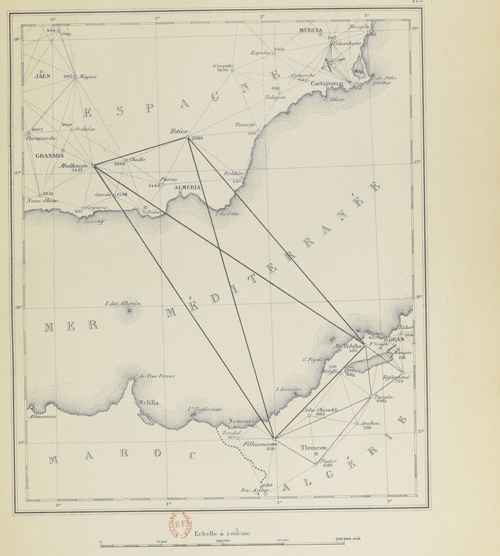
⤢| Station | Altitude | Observers | Observations | Latitude (p. 94) | Longitude W of Paris (p. 94) | W of Greenwich |
|---|---|---|---|---|---|---|
| Mulhacén | 3,481 m (p. iii) | Barraquer, Borrés, Cebrián (p. 44) | 69 series (pp. 46-47) | 37°03′17.59″ | 5°38′57.91″ | 3°18′43.88″ |
| Tetica | 2,080 m (p. iv) | López Puigcerver, Piñal (p. 52) | 98 series, 9 to 30 September 1879 (pp. 57-58) | 37°15′14.71″ | 4°45′03.14″ | 2°24′49.11″ |
| M'Sabiha | 591 m (p. 63) | Perrier (p. 69) | 76 series, 9 September to 1 October 1879 (pp. 70-71) | 35°39′37.05″ | 3°11′10.77″ | 0°50′56.74″ |
| Filhaoussen | 1,137 m (p. 76) | Bassot (p. 68) | 40 rounds (p. 83), 23 to 30 September 1879 (p. 84) | 35°00′34.64″ | 4°01′39.69″ | 1°41′25.66″ |
M'Sabiha is the highest point of Djebel Murdjadjo, 591 m above the sea (p. 63), 29 km from Oran (p. 64). Filhaoussen is a first-order point of the Algerian parallel chain. Its pillar stands on the vertical of the 1868 station centre (p. 77). Mulhacén is the highest summit of the Sierra Nevada (p. iii).
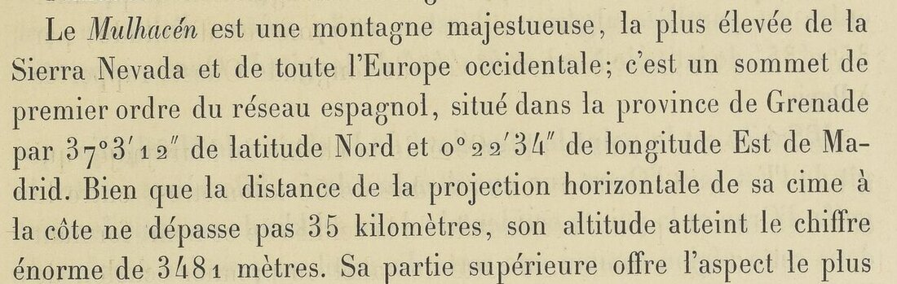
⤢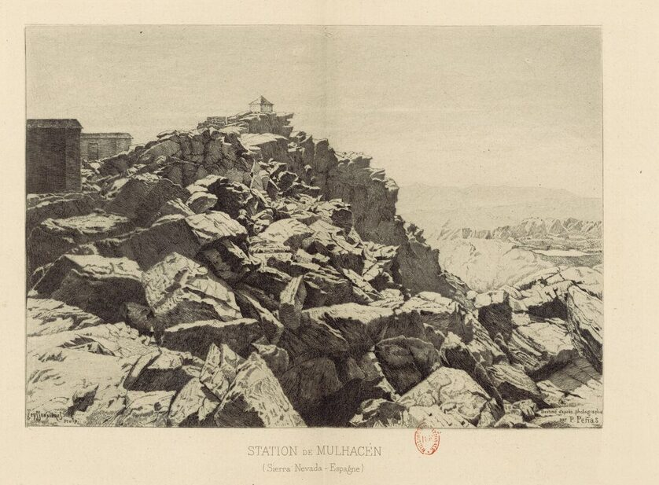
⤢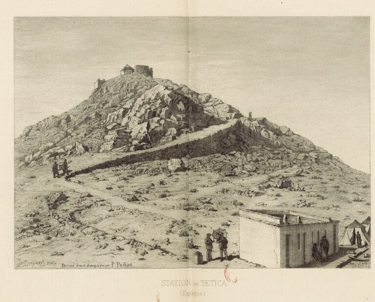
⤢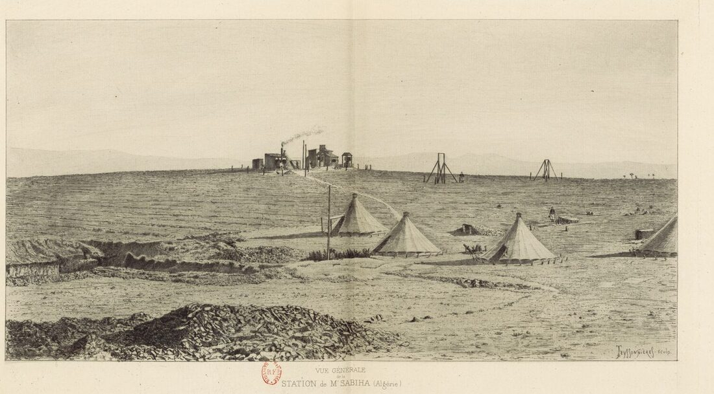
⤢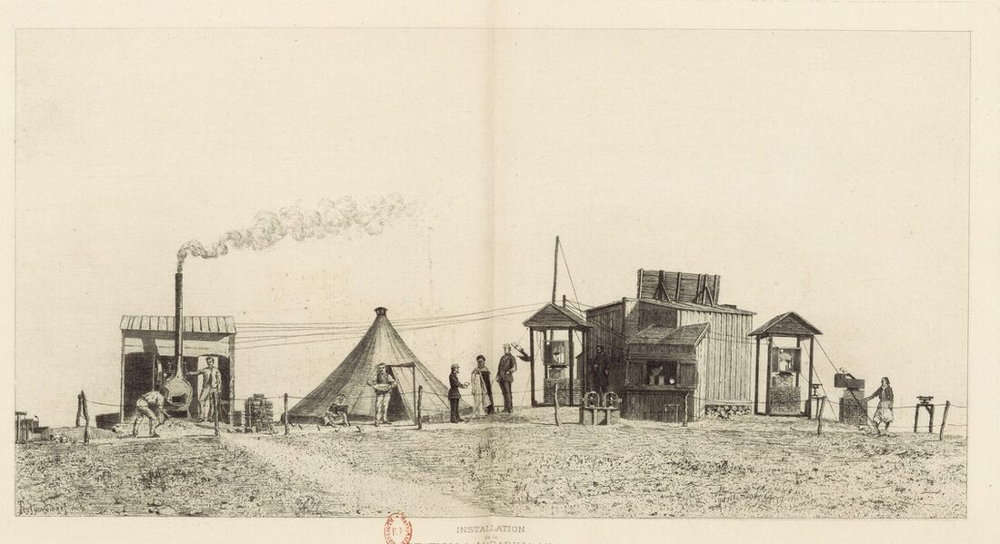
⤢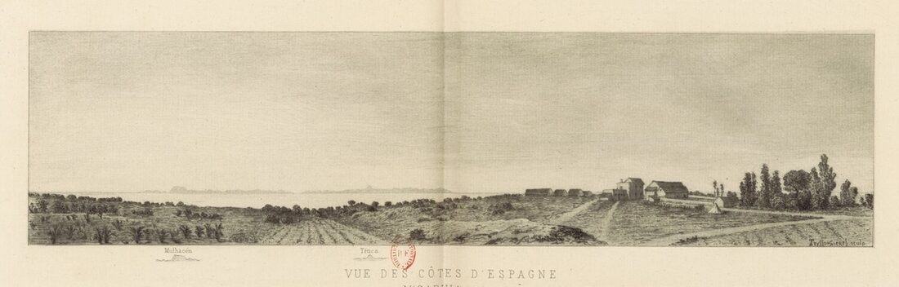
⤢Night signals
Perrier had planned on sun signals. They failed. No sun signal was seen in Spain or in Algeria (CR p. 886). The night lights were electric arcs in Mangin projectors. Gramme machines made the current, and steam engines of six horsepower drove them. The engines were carried up summits of 1,000 m to 3,550 m (CR p. 886-887). Petroleum collimators served the short land sides (p. 10, 11, 44).
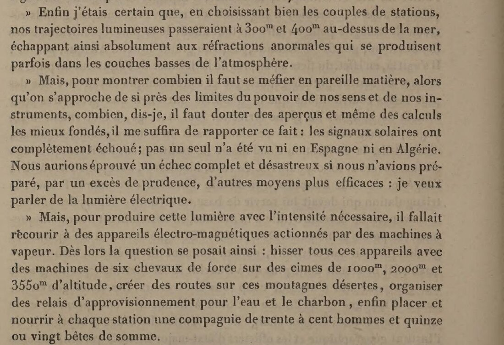
⤢The weather was fine, but the vapours that rose from the Mediterranean let no beam of sunlight through (CR pp. 887-888).
For twenty days nothing crossed the sea, by day or by night. On 9 September Perrier saw the light of Tetica. The next day he saw Mulhacén (CR p. 888).
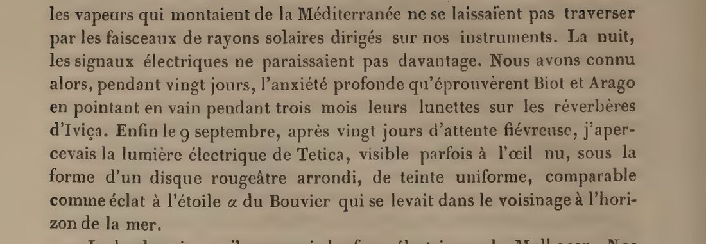
⤢"Enfin le 9 septembre, après vingt jours d'attente fiévreuse, j'apercevais la lumière électrique de Tetica, visible parfois à l'œil nu, sous la forme d'un disque rougeâtre arrondi, de teinte uniforme, comparable comme éclat à l'étoile α du Bouvier qui se levait dans le voisinage à l'horizon de la mer." (CR p. 888)⤢
"At last on 9 September, after twenty days of feverish waiting, I saw the electric light of Tetica, at times visible to the naked eye, as a round reddish disc of uniform tint, comparable in brightness to the star α Boötis, which was rising nearby on the sea horizon."
α Boötis is Arcturus.
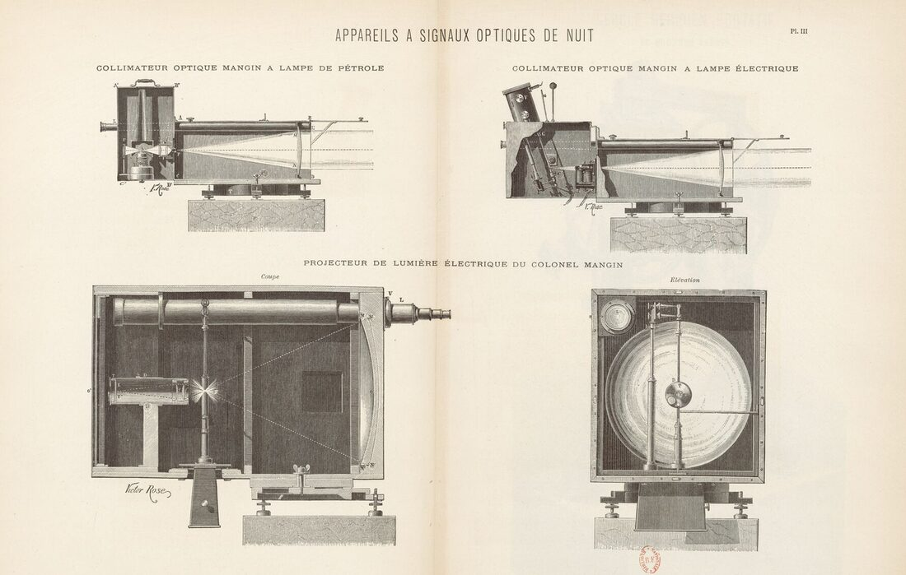
⤢4. The instrument and the corrections to each reading
All angles at the four stations were measured with the same type of instrument, the French azimuth circle (CR p. 887): the reiterating azimuth circle of Brunner brothers (Pl. II, p. 1). The graduation is 42 cm across. The telescope has a 62 cm focal length, 53 mm aperture, and powers 25, 30 and 40 (p. 3). Four micrometer microscopes read the limb (p. 5). A movable-wire micrometer in the eyepiece takes the pointings (p. 4). The French circles are divided in centesimal grades, the Spanish circles in sexagesimal degrees (p. 3).
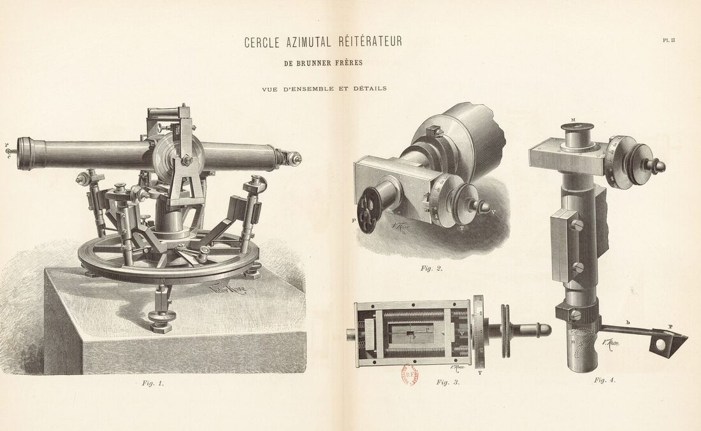
⤢The circle is reiterating. The limb turns on its axis, so the origin of the divisions can be moved for each new reiteration (p. 3). Each series is then read on a different part of the graduation, so errors of the graduation average out over the series.
Two constants were found for each circle: the value α of one level division, and the value K of one division of the eyepiece drum (pp. 6-7).
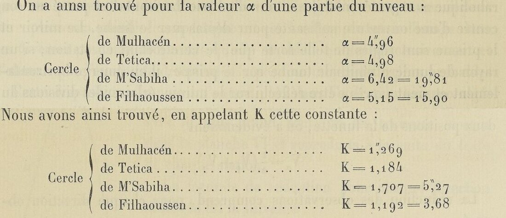
⤢Each direction got the index and four microscope readings, 6, 8 or 10 micrometer pointings, and level readings in both positions (p. 7). Each reading L′ on the limb was then corrected for three instrument errors (p. 8):
- Tilt of the horizontal axis: i″ cot Z, with i = ¼[D − D′ − (G − G′)] α. D, G are the bubble-end readings, D′, G′ the readings with the level reversed. Z is the zenith distance of the target.
- Collimation from the micrometer pointings: ± K(V − V₀)/sin Z, + with the drum on the right, − on the left. V₀ = ½(V₁ + V₂) is the zero-collimation point.
- The microscope correction C (run and tare).
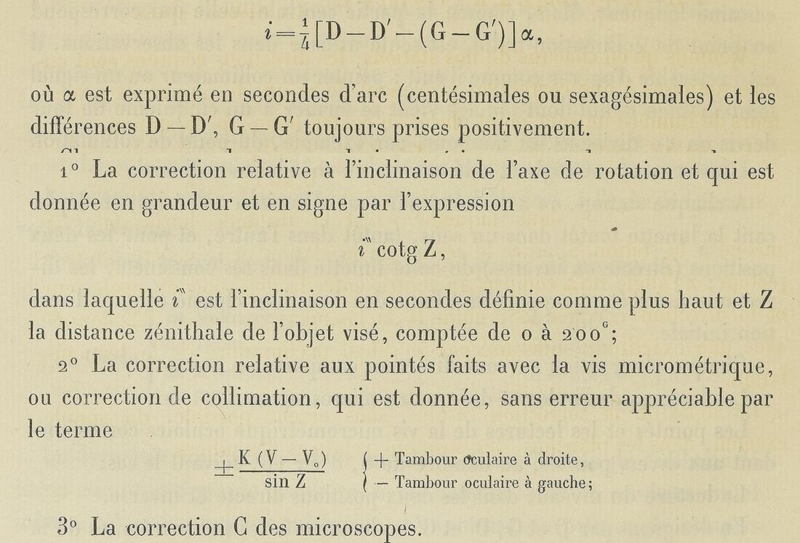
⤢The summary formula on p. 9 combines them:
L = L′ + i″ cot Z ± K″(V − V₀) + CThe p. 9 summary drops the /sin Z of the collimation term on p. 8. The targets lie near the horizontal (Z close to 100 grades, p. 83), so sin Z is close to 1. The corrections were applied with small precomputed tables (p. 9). The book does not print the single corrections. The station tables give only the corrected directions (p. 45). The station tables hold directions "corrigées des erreurs instrumentales d'inclinaison, de collimation et de tare des microscopes" (p. 45).
"corrected for the instrumental errors of inclination, collimation and microscope tare."
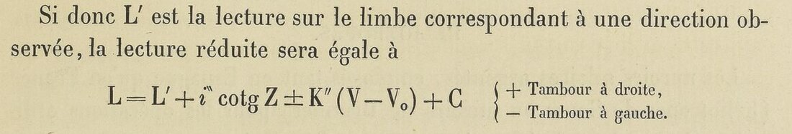
⤢Phase of the limb divisions is removed by lighting from the zenith. At night one lamp and a lens give the same beam (pp. 5-6).
5. Raw observations and station adjustment
Mulhacén in full
At Mulhacén each direction got eight micrometer pointings, four in each sense (p. 44). The table of observed directions has 69 series from 9 to 29 September (pp. 46-47). Each series starts from one direction set to zero. Most start on Tetica. Some start on Filhaoussen (series 34-39, 44-54, 62-69, p. 46-47).
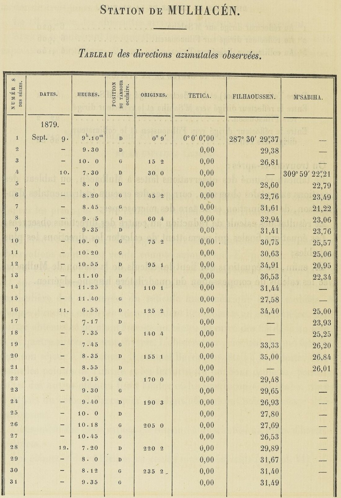
⤢The 38 series that start on Tetica and contain Filhaoussen give 26.53″ to 36.53″ past 287°30′. Their plain mean is 31.06″ (worked out here). One series scatters about ±2.5″ about that mean (standard deviation, worked out here). The book does not take the plain mean. Not every series holds all three directions, so the series are put into groups of equal weight (pp. 48-49):
- group 1: 20 series with all three directions;
- group 2: 18 series with Tetica and Filhaoussen;
- group 3: 6 series with Tetica and M'Sabiha;
- group 4: 25 series with Filhaoussen and M'Sabiha.
With provisional values Filhaoussen = 287°30′31″ + A and M'Sabiha = 309°59′23″ + B (p. 48), least squares gives two final equations (p. 50):
+13.0000 = +34.8333 A − 19.1667 B−9.0850 = −19.1667 A + 28.8333 B
The solution is A = +0.3151″ and B = −0.1056″ (p. 50). The "equations préparatoires" give the weight coefficients [αα] = 0.04527, [αβ] = 0.03009, [ββ] = 0.05468 (p. 50). These carry into the quadrilateral adjustment.
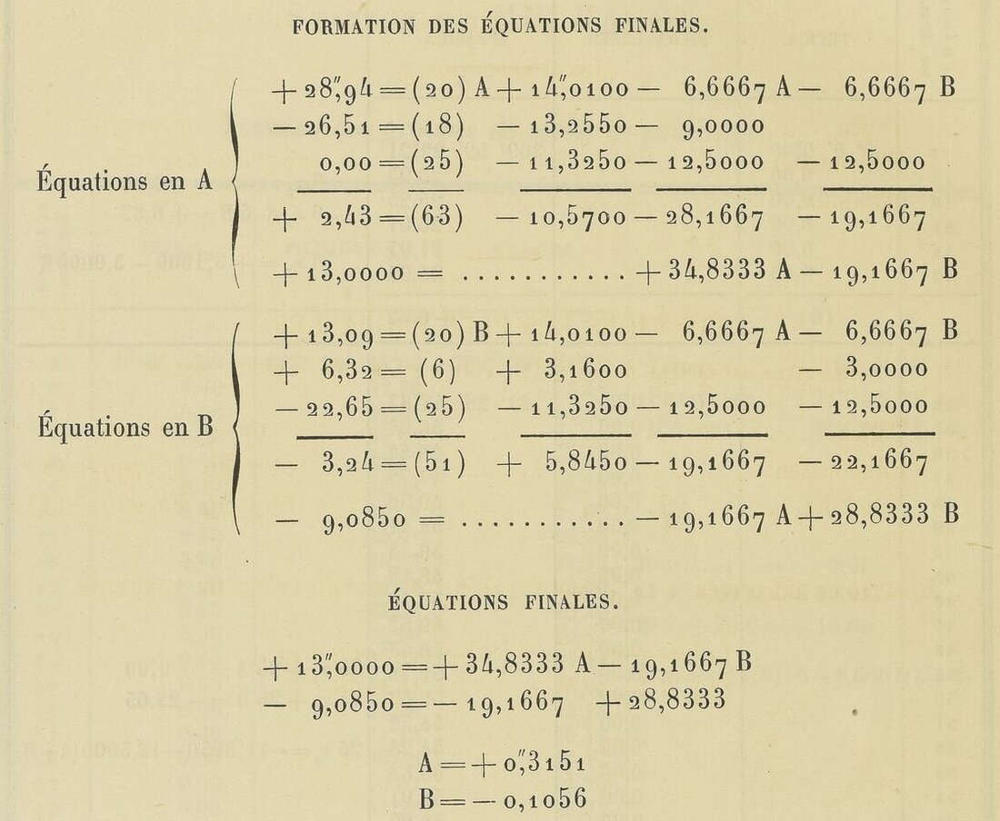
⤢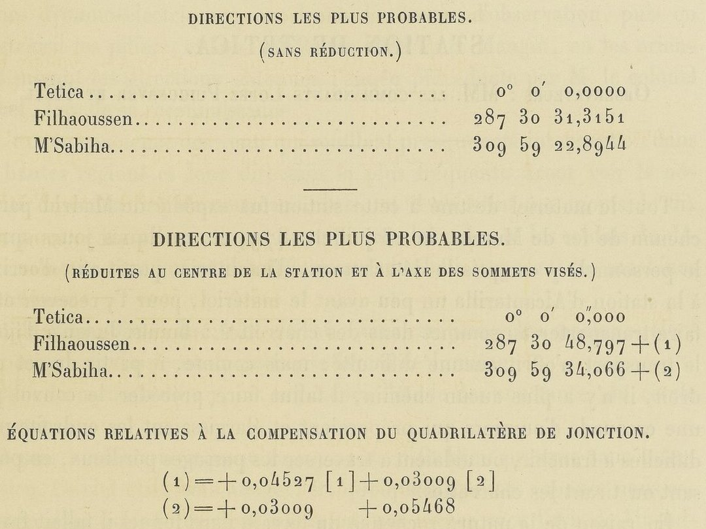
⤢All four stations
| Station | Series | Groups | Target | Without reduction | Reduced to centre | Weights [αα], [αβ], [ββ] |
|---|---|---|---|---|---|---|
| Mulhacén (p. 51) | 69 | 4 (weights 20, 18, 6, 25) | Filhaoussen | 287°30′31.3151″ | 287°30′48.797″ | 0.04527, 0.03009, 0.05468 |
| M'Sabiha | 309°59′22.8944″ | 309°59′34.066″ | ||||
| Tetica (p. 62) | 98 | 4 (weights 10, 4, 40, 44) | Filhaoussen | 89°39′9.803″ | 89°39′16.210″ | 0.05721, 0.02978, 0.03605 |
| M'Sabiha | 113°40′18.966″ | 113°40′27.271″ | ||||
| M'Sabiha (p. 75) | 76 | 4 (22, 18, 18, 18 series) | Mulhacén | 16°19′51.341″ | 16°19′52.219″ | 0.0408, 0.0204, 0.0408 |
| Filhaoussen | 95°8′43.577″ | 95°8′37.782″ | ||||
| Filhaoussen (p. 85) | 40 rounds | none (complete rounds) | Tetica | 60°51′17.522″ | 60°51′12.185″ | 0.05000, 0.02500, 0.05000 |
| Mulhacén | 78°43′43.309″ | 78°43′39.198″ |
| Station | Between the lights of | Angle |
|---|---|---|
| Mulhacén | Tetica-Filhaoussen | 72°29′11.2″ |
| Filhaoussen-M'Sabiha | 22°28′45.3″ | |
| Tetica-M'Sabiha | 50°00′25.9″ | |
| Tetica | Mulhacén-Filhaoussen | 89°39′16.2″ |
| Mulhacén-M'Sabiha | 113°40′27.3″ | |
| Filhaoussen-M'Sabiha | 24°01′11.1″ | |
| M'Sabiha | Tetica-Mulhacén | 16°19′52.2″ |
| Tetica-Filhaoussen | 95°08′37.8″ | |
| Mulhacén-Filhaoussen | 78°48′45.6″ | |
| Filhaoussen | M'Sabiha-Tetica | 60°51′12.2″ |
| M'Sabiha-Mulhacén | 78°43′39.2″ | |
| Tetica-Mulhacén | 17°52′27.0″ |
In all, 283 series and rounds were observed at the four stations (69 + 98 + 76 + 40, worked out here). They give 12 angles, three at each summit.
At M'Sabiha Perrier measured the equivalent of 40 complete rounds, with the circle origins spread every 2.5 grades (p. 68). At Filhaoussen the three lights were visible together, so Bassot measured 40 complete rounds and needed no group adjustment (p. 83).
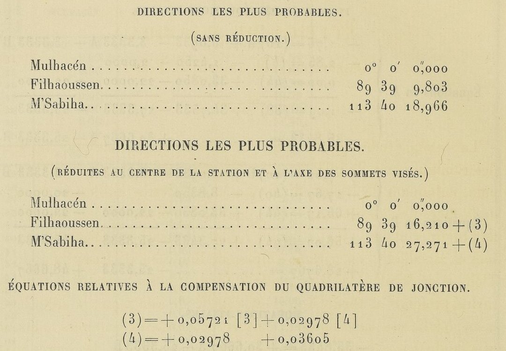
⤢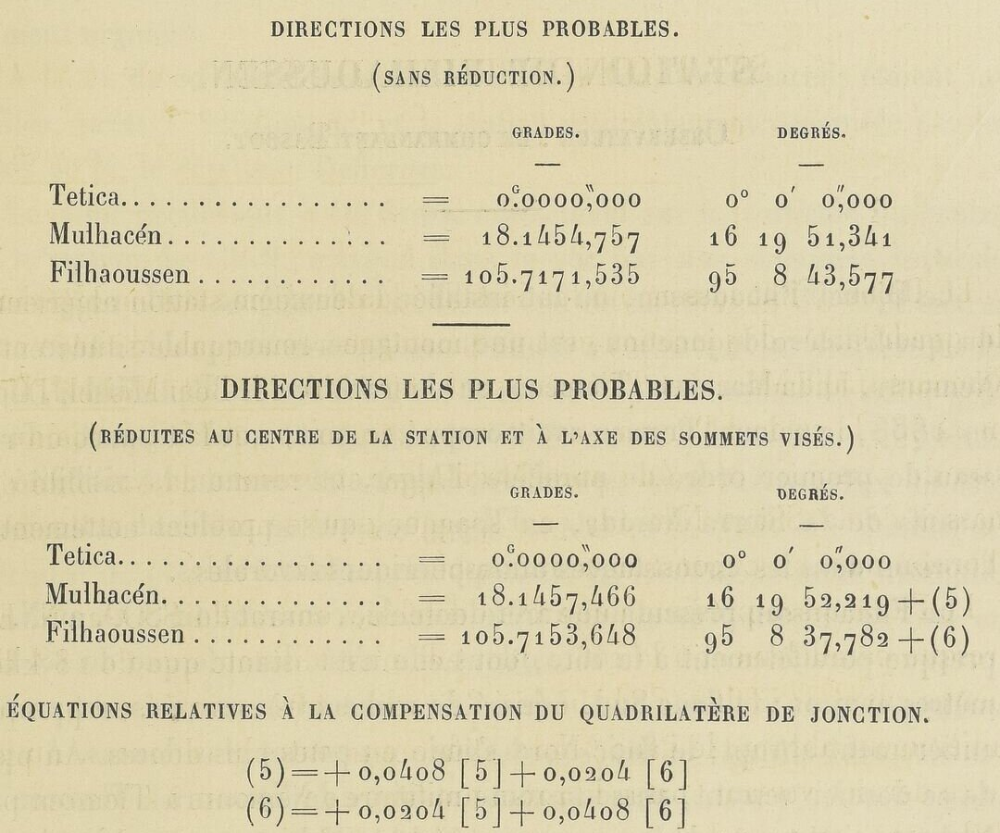
⤢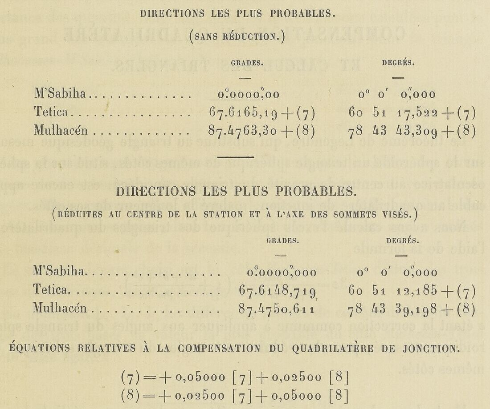
⤢6. Reduction to centre
The four stations worked at the same time. So the projectors could not stand on the station centres. They were grouped around each centre (p. 9). An observer at Σ who sights station S sees the projector R, not the centre S. Each observed direction is brought back to the centre by a small angle x (p. 9):
x″ = (r / D′) · sin α / sin 1″r is the horizontal distance from the centre S to the projector R. α is the angle RSΣ at the centre. D′ is the provisional length RΣ (p. 9). Only the projector offsets enter. The book lists no offset of the instrument itself (pp. 45, 56, 69, 83).
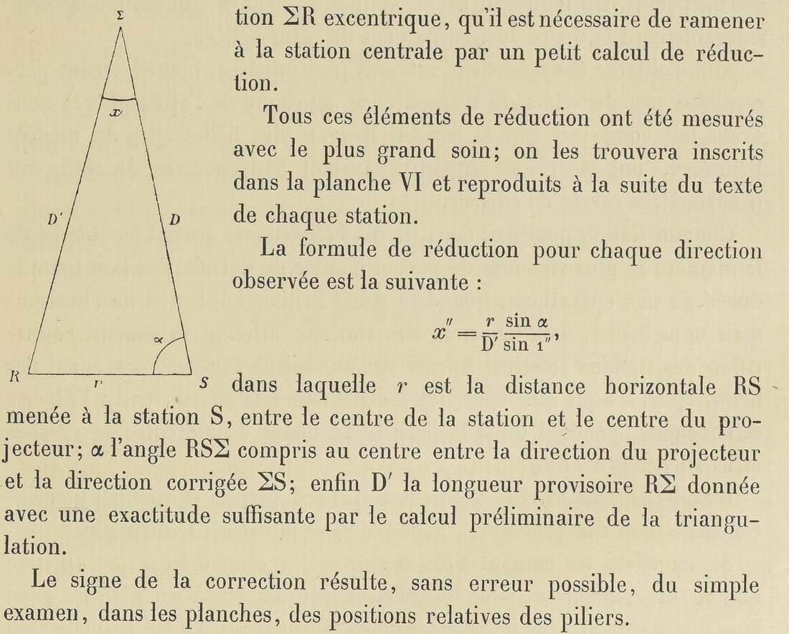
⤢"Le signe de la correction résulte, sans erreur possible, du simple examen, dans les planches, des positions relatives des piliers." (p. 9)⤢
"The sign of the correction follows, without possible error, from a simple look at the relative positions of the pillars in the plates."
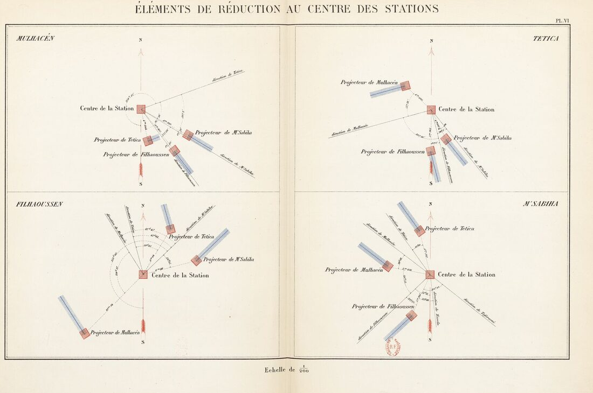
⤢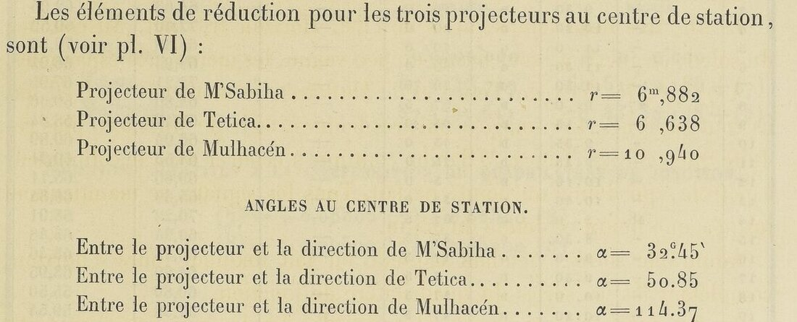
⤢| Projector at | aimed at | r | α | Page |
|---|---|---|---|---|
| Mulhacén | M'Sabiha / Filhaoussen / Tetica | 6.920 / 6.905 / 4.140 m | angles 49°2′, 22°2′, 26°34′ | p. 45 |
| Tetica | Mulhacén / Filhaoussen / M'Sabiha | 4.460 / 5.265 / 4.235 m | angles 57°11′, 131°48′, 27°18′ | p. 56 |
| M'Sabiha | Tetica / Mulhacén / Filhaoussen | 5.707 / 5.636 / 5.941 m | 23.93 / 26.06 / 23.73 g | p. 69 |
| Filhaoussen | M'Sabiha / Tetica / Mulhacén | 6.882 / 6.638 / 10.940 m | 32.45 / 50.85 / 114.37 g | p. 83 |
Worked example (worked out here). Mulhacén to Filhaoussen, origin Tetica.
Filhaoussen projector aimed at Mulhacén: r = 10.940 m, α = 114.37 g, D′ = 269,927 m. x = 8.148″.
Tetica projector aimed at Mulhacén: r = 4.460 m, α = 57°11′, D′ = 82,827 m. x = 9.334″.
Both shifts move the angle Tetica-Filhaoussen the same way: 8.148″ + 9.334″ = 17.482″. The printed directions differ by exactly that: 287°30′48.797″ − 287°30′31.3151″ = +17.482″ (p. 51).
Net shift of each direction, reduced minus unreduced (worked out here, from pp. 51, 62, 75, 85):
| Direction | Shift | Direction | Shift |
|---|---|---|---|
| Mulhacén → Filhaoussen | +17.482″ | M'Sabiha → Mulhacén | +0.878″ |
| Mulhacén → M'Sabiha | +11.172″ | M'Sabiha → Filhaoussen | −5.795″ |
| Tetica → Filhaoussen | +6.407″ | Filhaoussen → Tetica | −5.337″ |
| Tetica → M'Sabiha | +8.305″ | Filhaoussen → Mulhacén | −4.111″ |
The largest shift, 17.5″, is about one third of the 54.4″ excess of triangle 4,2,1, which it enters (worked out here).
The reduction lowers the angle sums. Without it, the observed angles add up to 64.28″, 87.12″, 47.41″ and 70.26″ over 180°. With it, 54.426″, 70.030″, 45.424″ and 61.028″ (worked out here). The raw angles show more excess, not less. Reduction to centre changes a triangle sum by up to 17.1″ (triangle 3,1,4, worked out here).
7. Starting side and the measured bases
No distance was measured on the four summits. Only angles were measured there. The scale of the whole quadrilateral comes from one Spanish side, Mulhacén-Tetica. Its length was carried through the Spanish triangulation from three measured bases: Madridejos, Arcos and Cartagena (p. 87). The three values LM, LA, LC were combined with weights inverse to the number of triangles between the side and each base (p. 87):
L = (LM/21 + LA/15 + LC/9) / (1/21 + 1/15 + 1/9) = 82,827.196 mThe three single values are not printed. The triangle table carries the side as 82,827.20 m (p. 92).
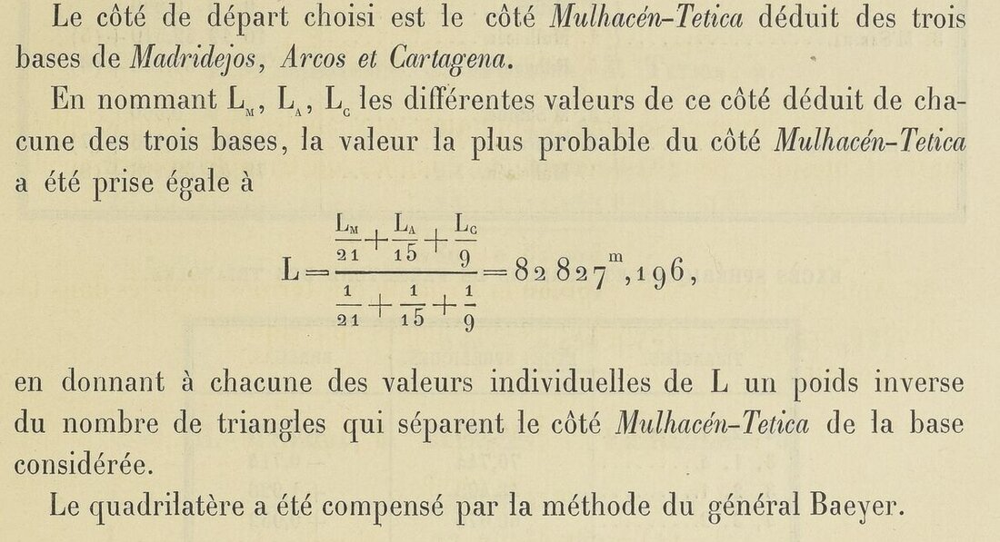
⤢"en donnant à chacune des valeurs individuelles de L un poids inverse du nombre de triangles qui séparent le côté Mulhacén-Tetica de la base considérée." (p. 87)⤢
"giving each individual value of L a weight inverse to the number of triangles that separate the side Mulhacén-Tetica from the base in question."
8. Quadrilateral adjustment, triangles and the side check
Four points joined by all six lines make a braced quadrilateral. This is the same configuration as the Cayley-Menger determinant: four points and their six mutual distances. The figure has more observations than it needs, so it must close. The authors adjusted it by General Baeyer's method (p. 87).
The input is the twelve reduced directions with their weight equations (p. 88).
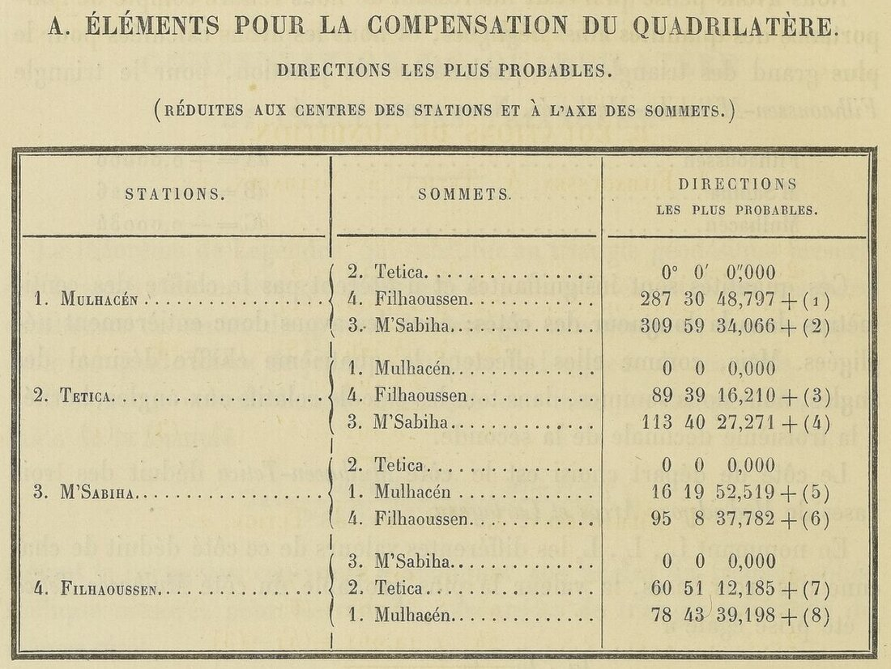
⤢Three angle conditions and one side condition must hold (pp. 89-90). Each angle condition sets the measured sum of a triangle equal to 180° plus its computed excess. The side condition demands that the sides close around the pole Mulhacén:
1 = sin(1,2,3) · sin(1,3,4) · sin(1,4,2) / [sin(1,4,3) · sin(1,3,2) · sin(1,2,4)]Each angle in it is first reduced by ⅓ε (p. 90). The four conditions give four normal equations, four correlates and eight corrections (p. 91).
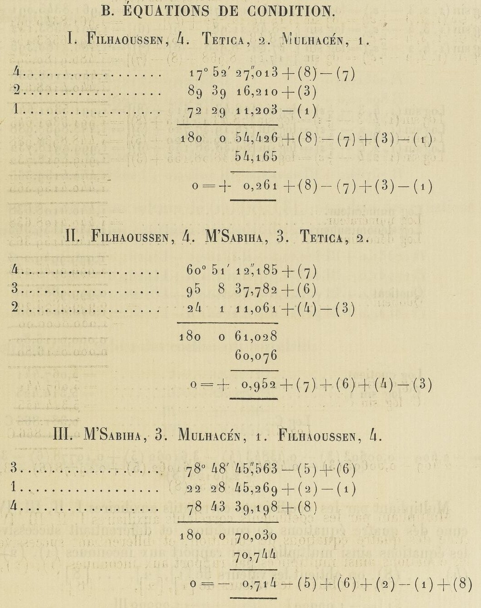
⤢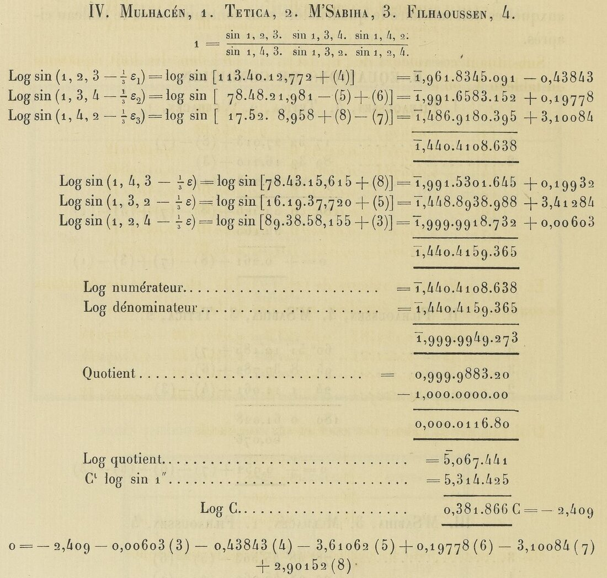
⤢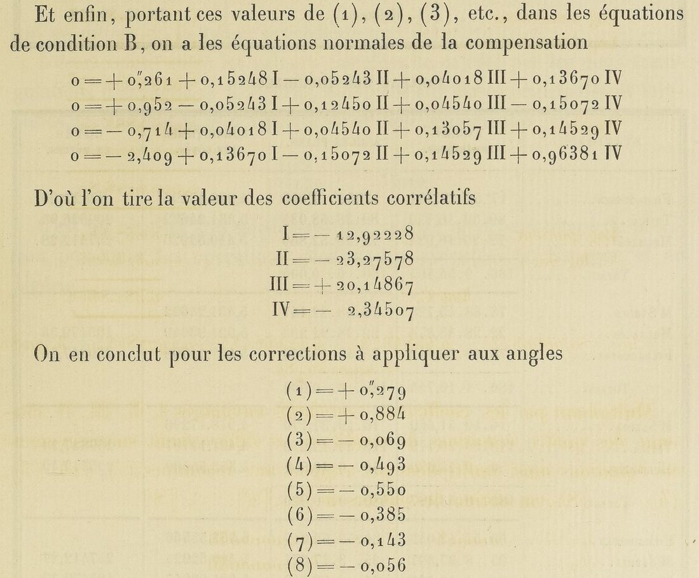
⤢| Correction | (1) | (2) | (3) | (4) | (5) | (6) | (7) | (8) |
|---|---|---|---|---|---|---|---|---|
| Value (p. 91) | +0.279″ | +0.884″ | −0.069″ | −0.493″ | −0.550″ | −0.385″ | −0.143″ | −0.056″ |
| Triangle | Station | Adjusted spherical angle | Total |
|---|---|---|---|
| 4,2,1 | Filhaoussen | 17°52′27.101″ | 180°0′54.165″ |
| Tetica | 89°39′16.140″ | ||
| Mulhacén | 72°29′10.924″ | ||
| 3,1,4 | M'Sabiha | 78°48′45.728″ | 180°1′10.744″ |
| Mulhacén | 22°28′45.874″ | ||
| Filhaoussen | 78°43′39.142″ | ||
| 3,2,1 | M'Sabiha | 16°19′51.669″ | 180°0′43.497″ |
| Tetica | 113°40′26.778″ | ||
| Mulhacén | 50°0′25.050″ | ||
| 4,3,2 | Filhaoussen | 60°51′12.042″ | 180°1′0.076″ |
| M'Sabiha | 95°8′37.397″ | ||
| Tetica | 24°1′10.637″ |
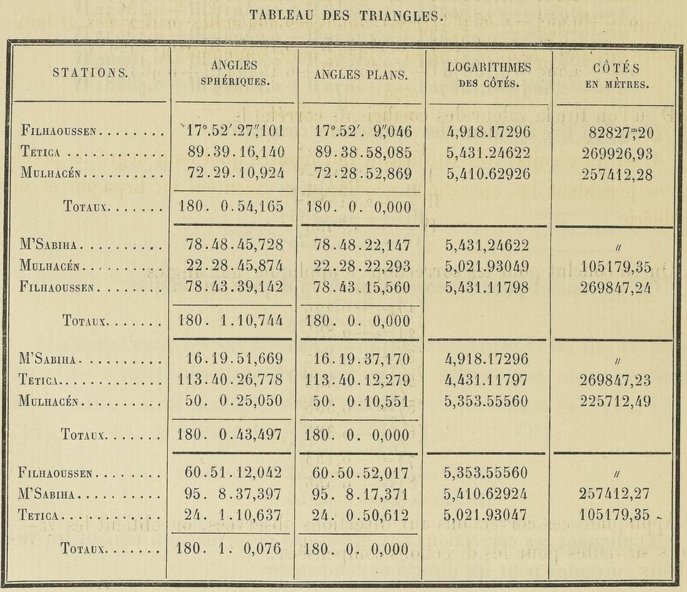
⤢The figure is built from one side. From Mulhacén-Tetica, the angles at its two ends (72°29′11.2″ and 89°39′16.2″) fix Filhaoussen. The angles 50°00′25.9″ and 113°40′27.3″ fix M'Sabiha. The side M'Sabiha-Filhaoussen then follows from Spain alone (worked out here, from pp. 51, 62, 92).
| Side | Length (p. 92) |
|---|---|
| Mulhacén-Tetica (starting side) | 82,827.20 m |
| Mulhacén-Filhaoussen | 269,926.93 m |
| Mulhacén-M'Sabiha | 269,847.24 m |
| Tetica-Filhaoussen | 257,412.28 m |
| Tetica-M'Sabiha | 225,712.49 m |
| M'Sabiha-Filhaoussen | 105,179.35 m |
The side check
The Algerian triangulation, from the bases of Algiers and Oran, gives the side M'Sabiha-Filhaoussen independently: 105,178.56 m. The quadrilateral gives 105,179.35 m. The difference is 0.79 m, or 1/133,000 (p. 93).
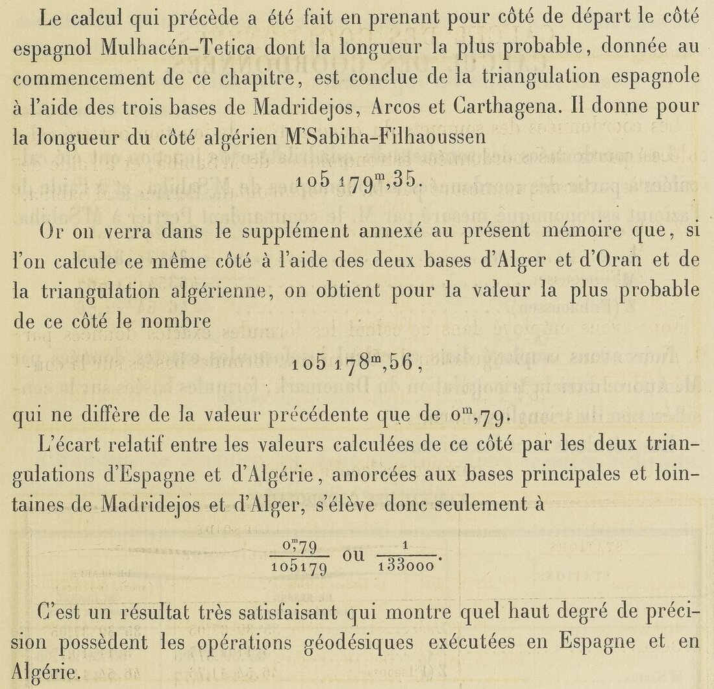
⤢"C'est un résultat très satisfaisant qui montre quel haut degré de précision possèdent les opérations géodésiques exécutées en Espagne et en Algérie." (p. 93)⤢
"This is a very satisfactory result, which shows how high a degree of precision the geodetic operations carried out in Spain and in Algeria possess."
Coordinates
The coordinates of the four summits were computed from the astronomical latitude and longitude of M'Sabiha and Perrier's astronomical azimuth there, with Andrae's exact formulas, on the Bessel and Clarke ellipsoids (p. 94). At Tetica the authors then compared the astronomical azimuth and longitude of Merino and Esteban with the geodetic ones (p. 95). This is the Laplace relation:
Za − Zg + (Ma − Mg) sin L = 0The terms are +6.77″ and −4.27″, residual +2.50″ (p. 95).
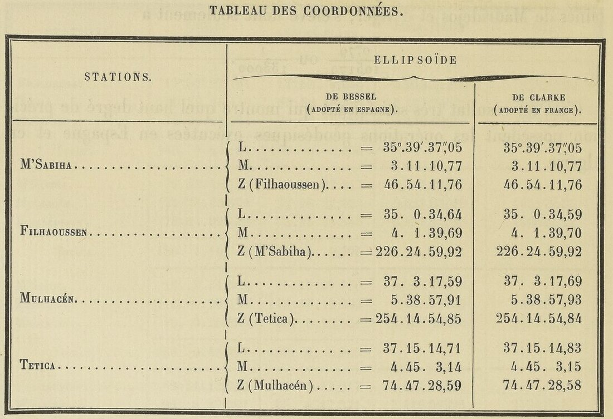
⤢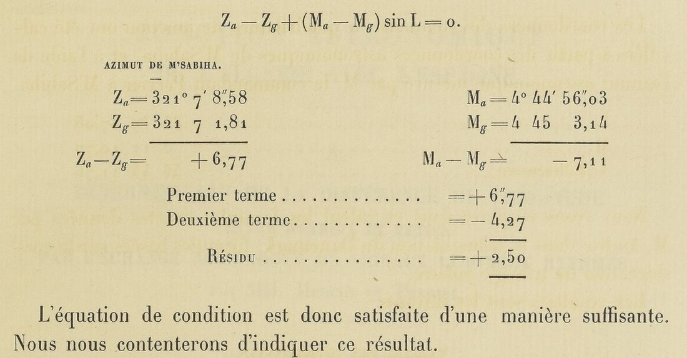
⤢"L'équation de condition est donc satisfaite d'une manière suffisante." (p. 95)⤢
"The condition equation is therefore satisfied sufficiently."
9. Spherical excess: measured and computed, and R
Two different numbers. The memoir uses one word, "excès sphérique", for a computed quantity. The angles give a second, measured quantity. They must be kept apart.
Computed excess. The column "Excès sphériques" on p. 88 is not taken from the angles. It is computed from the sides by Legendre's formula (p. 86), with the meridian radius of curvature ρm and the prime-vertical radius Nm at the centre of the triangle:
3ε = [ab sin C / (2 ρm Nm sin 1″)] · [1 + (a² + b² + c²) / (24 ρm Nm)]It is the excess that a triangle with those sides has on the adopted figure of the Earth.
Measured excess. This is the sum of the three observed angles minus 180°. It needs only the circle readings. The book prints the sums in its condition equations: 180° 0′ 54.426″, 180° 0′ 61.028″, 180° 0′ 70.030″ (p. 89).
Closure. Measured minus computed. This is the "erreur" column on p. 88.
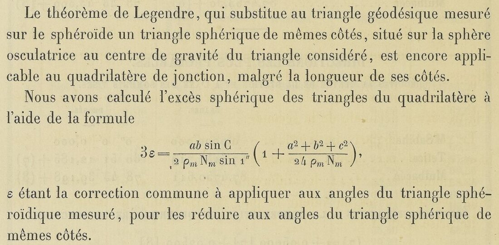
⤢"Le théorème de Legendre, qui substitue au triangle géodésique mesuré sur le sphéroïde un triangle sphérique de mêmes côtés, situé sur la sphère osculatrice au centre de gravité du triangle considéré, est encore applicable au quadrilatère de jonction, malgré la longueur de ses côtés." (p. 86)⤢
"Legendre's theorem, which replaces the geodesic triangle measured on the spheroid by a spherical triangle with the same sides, on the osculating sphere at the centre of gravity of the triangle, still applies to the junction quadrilateral, in spite of the length of its sides."
Legendre's theorem as a shortcut. The same theorem is used to solve the triangles. Take one third of the computed excess from each spherical angle. The three plane angles then add up to exactly 180°. Solve this plane triangle, with the same sides, by the sine rule (p. 92, columns "angles sphériques" and "angles plans"). Example, triangle 4,2,1: one third of 54.165″ is 18.055″ (worked out here), and 17°52′27.101″ becomes 17°52′9.046″ (p. 92). The shortcut uses the computed excess. It does not replace the measured excess.
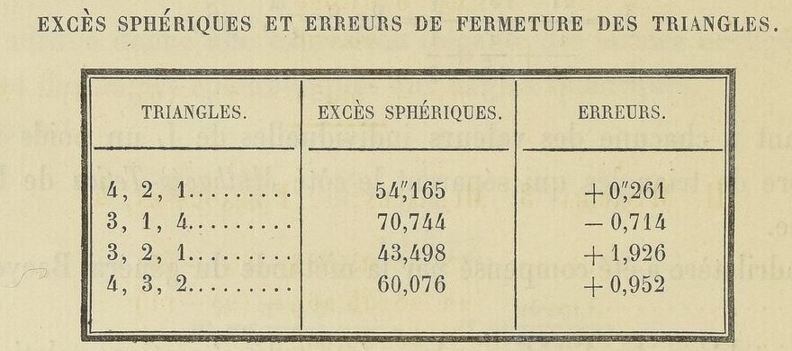
⤢| Triangle | Measured sum − 180° | Without reduction | Computed ε (p. 88) | Closure (p. 88) | Area | R from measured |
|---|---|---|---|---|---|---|
| 4,2,1 Filh., Tet., Mul. | 54.426″ | 64.28″ | 54.165″ | +0.261″ | 10,660.2 km² | 6,357 km |
| 3,1,4 MSab., Mul., Filh. | 70.030″ | 87.12″ | 70.744″ | −0.714″ | 13,921.2 km² | 6,404 km |
| 3,2,1 MSab., Tet., Mul. | 45.424″ | 47.41″ | 43.498″ | +1.926″ | 8,561.2 km² | 6,235 km |
| 4,3,2 Filh., MSab., Tet. | 61.028″ | 70.26″ | 60.076″ | +0.952″ | 11,822.4 km² | 6,322 km |
| Quadrilateral | 115.454″ | 22,482.6 km² | 6,338 ± 44 km |
Both diagonals give the same total. Split along Tetica-Filhaoussen: 54.426″ + 61.028″ = 115.454″. Split along Mulhacén-M'Sabiha: 70.030″ + 45.424″ = 115.454″ (worked out here). The two areas agree too: 22,482.6 km² and 22,482.4 km².
R from the angles alone. On a sphere the excess of a triangle is its area divided by R², in radians, plus the small second-order term of the p. 86 formula. So R follows from the measured excess and the area: R = √(A/ε). For the quadrilateral, 22,482.6 km² and 115.454″ give R = 6,338 km (worked out here). The band ± 44 km comes from the rms closure of the four triangles, 1.14″, taken over the two triangles of one split (worked out here).
On a plane the angles of a triangle add up to exactly 180°. The excess would be 0″, and no finite R would follow.
Perrier gave the first, provisional excesses in November 1879 (CR p. 888): 54.16″, 70.73″, 43.50″, 60.07″, with errors +0.18″, −0.54″, +1.84″, +1.12″.
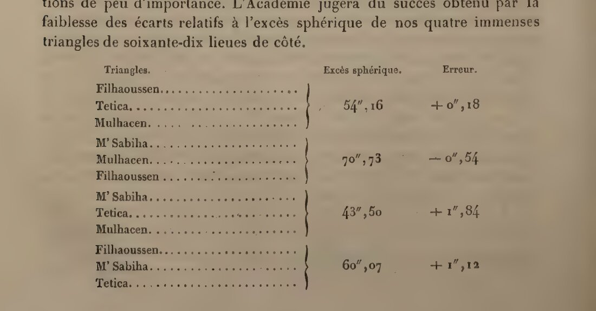
⤢10. The vertical check
At Filhaoussen, Bassot recorded the zenith distances of the three other summits (p. 83). They are printed to 0.01 grade, so each is good to about ± 16″ (worked out here). A zenith distance above 100 grades means the target lies below the horizontal.
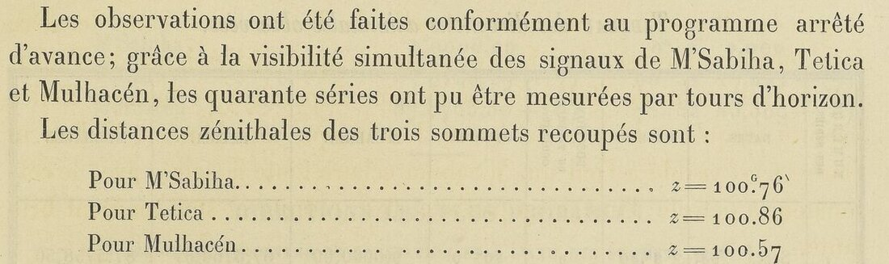
⤢| Target | Altitude | Distance (p. 92) | z printed (p. 83) | z in degrees | Globe, k = 0.13 | Flat |
|---|---|---|---|---|---|---|
| M'Sabiha | 591 m | 105.18 km | 100.76 g | 90°41′02″ | 100.79 g (90°42′32″) | 100.33 g (90°17′51″) |
| Tetica | 2,080 m | 257.41 km | 100.86 g | 90°46′26″ | 100.89 g (90°47′50″) | 99.77 g (89°47′24″) |
| Mulhacén | 3,481 m | 269.93 km | 100.57 g | 90°30′47″ | 100.62 g (90°33′30″) | 99.45 g (89°30′09″) |
Mulhacén stands 2,344 m higher than Filhaoussen (worked out here). It was seen 30′47″ below the horizontal. A flat surface puts it 29′51″ above the horizontal (worked out here). A flat surface also puts Tetica above the horizontal, by 12′36″ (worked out here). The globe model matches all three printed readings to within 0.051 grade (2′44″, worked out here).
How high the sight lines run
With normal refraction (k = 0.13), the lowest point of each sea-crossing line lies at these heights above the sea (worked out here): Mulhacén-Filhaoussen 789 m, Mulhacén-M'Sabiha 373 m, Tetica-Filhaoussen 428 m, Tetica-M'Sabiha 307 m. Perrier had planned for paths 300 m and 400 m above the sea, clear of the low layers (CR p. 886).
At M'Sabiha the rays to Mulhacén and Tetica make 0.31 g and 0.24 g with the rays tangent to the sea horizon. At 90 km, where the M'Sabiha rays touch the sea, the tangent rays lie 414 m and 320 m below the rays to the two Spanish summits (pp. 68-69). The authors therefore applied no lateral refraction correction.
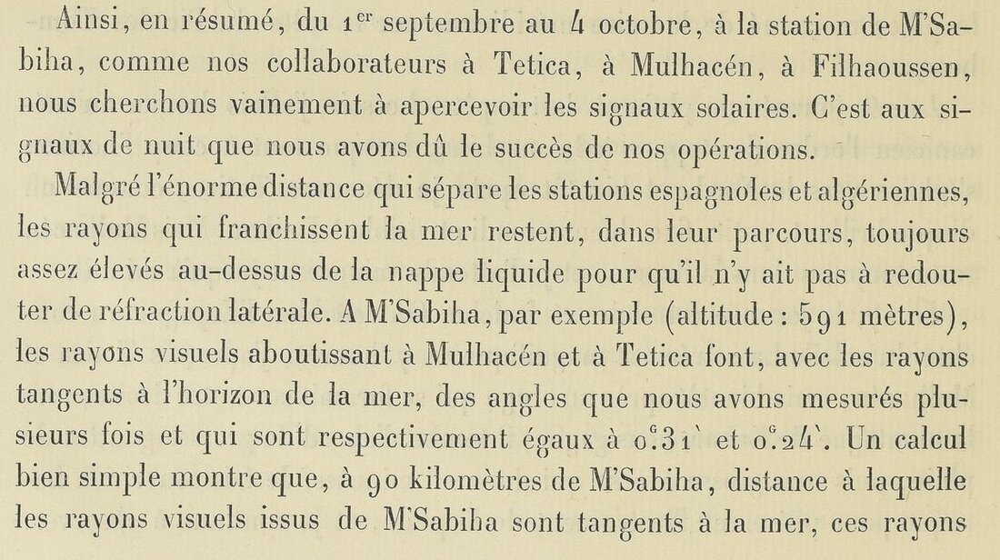
⤢"les rayons qui franchissent la mer restent, dans leur parcours, toujours assez élevés au-dessus de la nappe liquide pour qu'il n'y ait pas à redouter de réfraction latérale." (p. 68)⤢
"the rays that cross the sea stay, along their whole path, high enough above the water that lateral refraction is not to be feared."
11. Astronomy: longitude, latitudes, azimuths, the second R
Longitude by light signals
No telegraph wire or cable joined Tetica and M'Sabiha. Each station took its time from its own star transits. The two clocks were then compared by rhythmic electric light signals sent both ways across the sea (p. 183, 199). The rhythm was one eclipse every 2 seconds: 1 s of light, 1 s of dark (p. 193). Each observer recorded the eclipses on a chronograph, like star transits (p. 201). The exchanges took place on 7 nights, 20 October to 11 November 1879 (p. 239). The 7 nights gave 11 exchanges in all (p. 239).
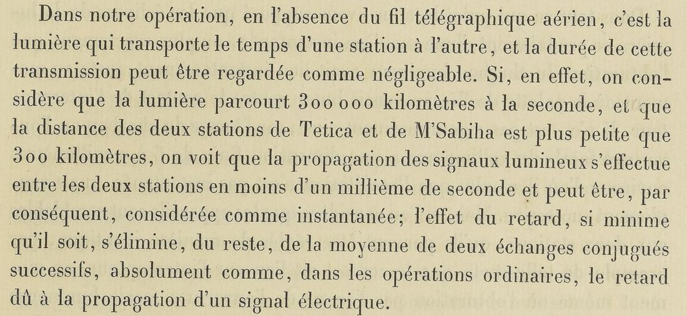
⤢"on voit que la propagation des signaux lumineux s'effectue entre les deux stations en moins d'un millième de seconde et peut être, par conséquent, considérée comme instantanée" (p. 201)⤢
"one sees that the light signals travel between the two stations in less than one thousandth of a second, and can therefore be taken as instantaneous"
The light-travel delay, under 1/1000 s over less than 300 km, also cancels in the mean of two conjugate exchanges (p. 201). No correction was applied.
The clock-to-clock difference L′ over the 7 nights has a weighted mean of 6m 14.935s ± 0.012s, weight 8.1 (p. 241). Two personal equations were then added (p. 241):
- astronomical personal equation of the two observers, P − M = +0.113s ± 0.005s, from Paris and Madrid comparisons (pp. 187, 191);
- half the personal equation for light signals, ½(Π − M) = +0.069s ± 0.003s (pp. 196, 198).
A personal equation is the difference between two observers in the time they take to react and tap. P − M is for star transits, Π − M for light signals.
dL = 6m 14.935s + 0.113s − 0.069s = 6m 14.979s ± 0.013sIn arc this is 1°33′44.685″ (worked out here).
| Night, 1879 | L′ | Mean error | Weight |
|---|---|---|---|
| 20 October | 6m 14.997s | ± 0.036s | 0.9 |
| 23 October | 6m 15.012s | ± 0.034s | 1.1 |
| 30 October | 6m 14.967s | ± 0.030s | 1.4 |
| 7 November | 6m 14.910s | ± 0.033s | 1.1 |
| 9 November | 6m 14.876s | ± 0.032s | 1.2 |
| 10 November | 6m 14.928s | ± 0.031s | 1.3 |
| 11 November | 6m 14.861s | ± 0.033s | 1.1 |
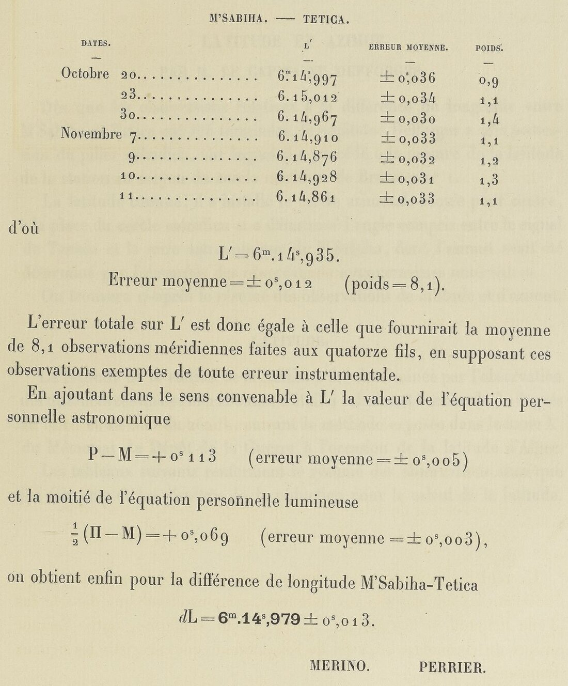
⤢Latitudes
At M'Sabiha, Defforges observed meridian zenith distances of stars north and south of the zenith. The final latitude of the astronomical pillar is 35°39′37.05″, probable error ± 0.1″ (p. 258). It rests on 180 single values in four series of circle position and nadir setting (pp. 252-253).
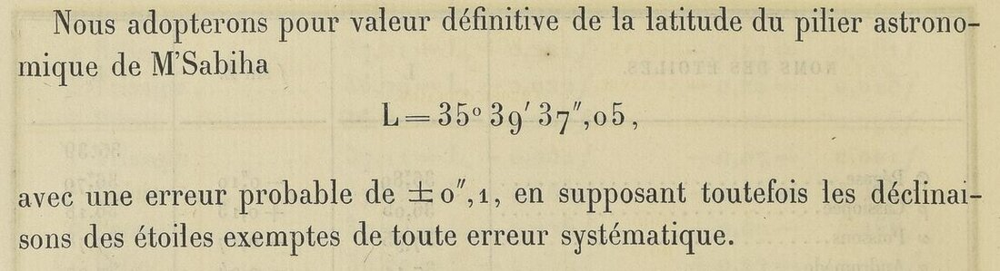
⤢"en supposant toutefois les déclinaisons des étoiles exemptes de toute erreur systématique." (p. 258)⤢
"on the assumption that the star declinations are free of any systematic error."
At Tetica, Esteban observed circummeridian zenith distances of 9 stars in 42 series, 5 to 13 November (pp. 263-265). After a flexure correction (pp. 267-268), the latitude of the geodetic summit is 37°15′11.9″ (p. 269). The book prints the error as "± 0s,09".
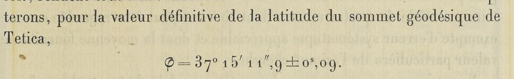
⤢Azimuths
At M'Sabiha the astronomical azimuth of the south mark is −6.048s (p. 258). Defforges measured the angle from the mark to the Tessala signal (p. 258). With the compensated angles this gives the azimuth of Tetica, 157.8299,87 g, counted from south through west (p. 260). M'Sabiha's azimuth to Filhaoussen, 46°54′11.76″, is the starting azimuth of the coordinate computation (p. 94). At Tetica, Esteban measured the azimuth of Tetica-Gigante against Polaris: 214°57′58.72″ ± 0.19″ (p. 272).
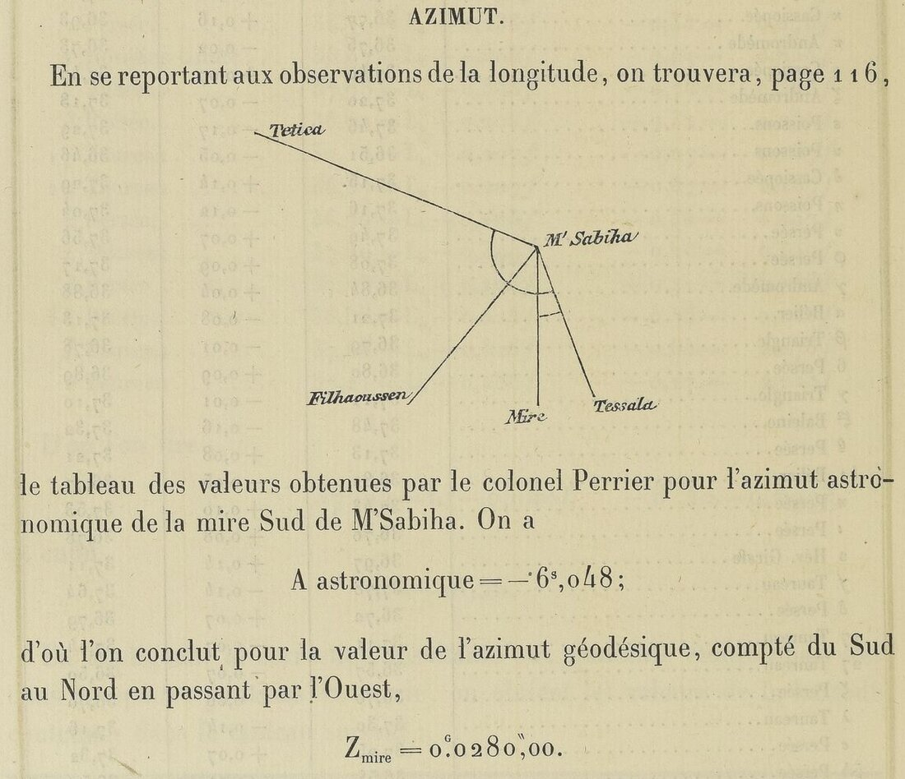
⤢The second R
The astronomical coordinates fix the directions of the plumb lines at the two ends of the side Tetica-M'Sabiha. Latitudes 35°39′37.05″ (p. 258) and 37°15′11.9″ (p. 269), longitude difference 1°33′44.685″ (p. 241), give an arc of 2.0289° between the two zeniths on a sphere (worked out here). The side is 225,712.49 m (p. 92). The ratio gives R = 6,374 km (worked out here). This R comes from star observations and one measured side, without the horizontal angles.
Deflection of the vertical
| Tetica | Geodetic (p. 94, Bessel) | Astronomical | Difference |
|---|---|---|---|
| Latitude | 37°15′14.71″ | 37°15′11.9″ (p. 269) | 2.8″ |
| Longitude difference from M'Sabiha | 1°33′52.37″ | 1°33′44.685″ (p. 241) | 7.7″ |
These seconds are the deflection of the vertical at Tetica relative to M'Sabiha: the local plumb line does not point along the ellipsoid normal. The book's own Laplace check uses Merino's longitude, Ma = 4°44′56.03″, and gives Ma − Mg = −7.11″ (p. 95).
The authors' conclusion
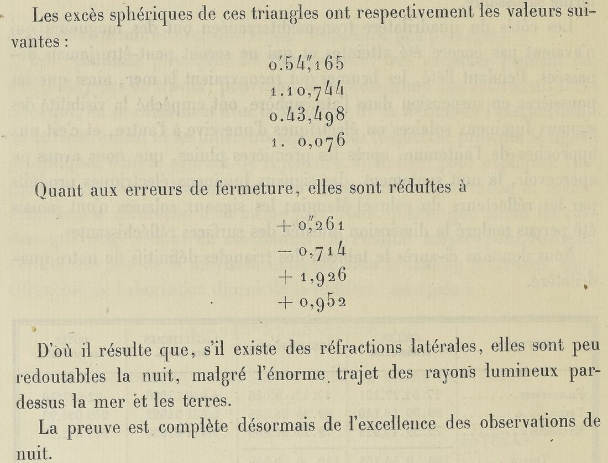
⤢"D'où il résulte que, s'il existe des réfractions latérales, elles sont peu redoutables la nuit, malgré l'énorme trajet des rayons lumineux par-dessus la mer et les terres." (p. 274)⤢
"It follows that, if lateral refractions exist, they are of little concern at night, in spite of the enormous path of the light rays over the sea and the land."
"La preuve est complète désormais de l'excellence des observations de nuit." (p. 274)⤢
"The proof of the excellence of night observations is now complete."
"L'écart entre les deux valeurs est de 0m,79 ou 1/133,000 seulement de la longueur du côté." (p. 275)⤢
"The difference between the two values is 0.79 m, or only 1/133,000 of the length of the side."
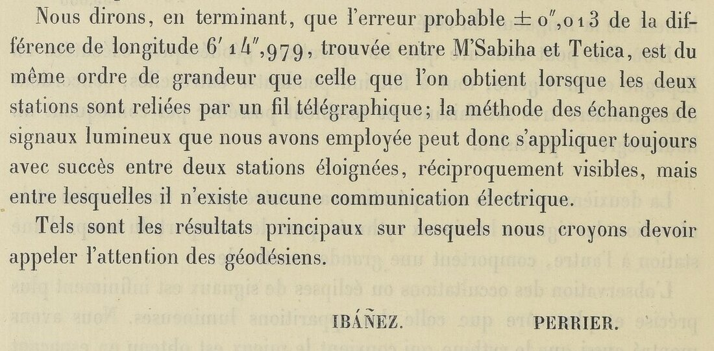
⤢"l'erreur probable ± 0″,013 de la différence de longitude 6′ 14″,979, trouvée entre M'Sabiha et Tetica, est du même ordre de grandeur que celle que l'on obtient lorsque les deux stations sont reliées par un fil télégraphique" (p. 276)⤢
"the probable error ± 0.013 of the longitude difference 6m 14.979s, found between M'Sabiha and Tetica, is of the same order as that obtained when the two stations are joined by a telegraph wire"
12. How the flashes compare the clocks
Each station had its own clock. Each was a sidereal clock, which keeps star time: one turn of its dial is one turn of the stars. On 11 November, at a star's transit, each clock read within 1m 36s of the star's right ascension (pp. 144, 175). The two clocks did not agree. One eclipse of the lamp is one instant, and both stations see it. Each observer tapped the eclipse on the chronograph of his own station, like a star transit (p. 201). So one eclipse gives two clock readings of the same instant.
The first eclipse of the first Tetica block on 11 November 1879 reads 22h 54m 21.70s on the Tetica chronograph and 22h 59m 03.93s on the M'Sabiha chronograph. The difference is 4m 42.23s (p. 210). The block holds 37 signals. The mean difference is 4m 42.176s (p. 210).
| Tetica chronograph | M'Sabiha chronograph | Difference |
|---|---|---|
| 22h 54m 21.70s | 22h 59m 03.93s | 4m 42.23s |
| 22h 54m 23.70s | 22h 59m 05.83s | 4m 42.13s |
| 22h 54m 25.70s | 22h 59m 07.85s | 4m 42.15s |
| 22h 54m 27.71s | 22h 59m 09.88s | 4m 42.17s |
| 22h 54m 29.70s | 22h 59m 11.89s | 4m 42.19s |
| 22h 54m 31.70s | 22h 59m 13.89s | 4m 42.19s |
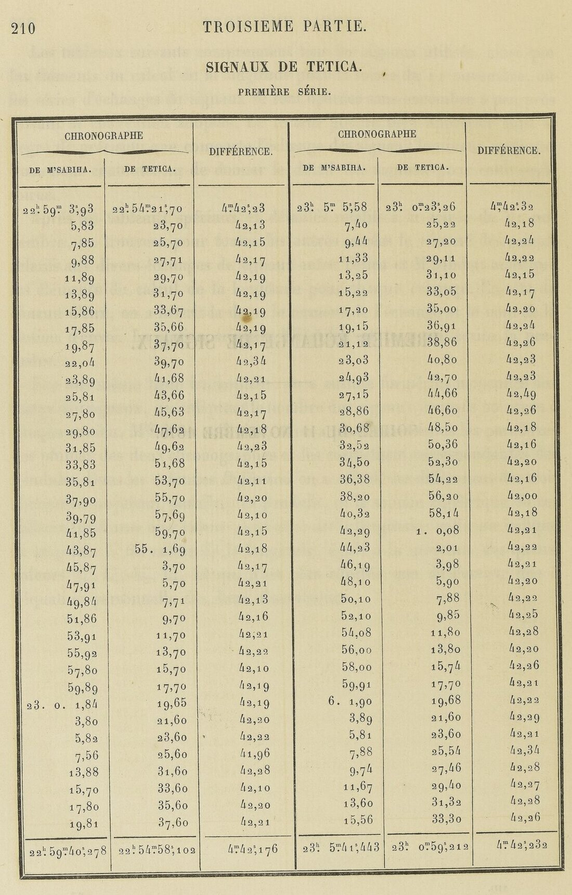
⤢Light travel time
The side Tetica-M'Sabiha is 225,712.49 m (p. 92). Light crosses it in about 0.00075 s (worked out here). The book puts it under one thousandth of a second (p. 201). The delay adds to the measured gap when Tetica sends and subtracts from it when M'Sabiha sends. The mean of the two directions cancels it. The same mean cancels the delays of the lamps and the chronographs (pp. 183, 201-202). The flashes measure no distance. They give only the gap between the two clocks.
The signal schedule
- At 7h both lights burned steadily, so that each observer could aim his telescope (pp. 199-201).
- From 7h30m the exchanges ran in blocks of 40 signals. The direction changed from block to block (pp. 199-201).
- The rhythm was 1 s of light and 1 s of dark (p. 193). The observers tapped the eclipse (p. 201).
- A second exchange followed at 9h30m, and a third near 11h (pp. 199-201).
From a block to the clock difference
Under each block the book adds the pen parallax of each chronograph and the correction of each clock from its stars (section 13). The first Tetica block reduces as follows (p. 236):
| Term | M'Sabiha | Tetica | Difference |
|---|---|---|---|
| Mean of 37 signals | 22h 59m 40.278s | 22h 54m 58.102s | 4m 42.176s |
| Pen parallax | +0.007s | +0.045s | −0.038s |
| Clock correction | +1m 35.078s | +2.207s | +1m 32.871s |
| Sum L″₁ | 6m 15.009s |
The two clock corrections come from the night formulas of section 13, taken at the block mean times: 35.184 + 0.155 (22.9945 − 23.675) = 35.078 s at M'Sabiha, and 2.351 + 0.045 (22.916 − 26.125) = 2.207 s at Tetica (worked out here). Both match p. 236.
The first block sent from M'Sabiha gives 6m 14.581s (p. 236). The Tetica block is high and the M'Sabiha block is low by the one-way delays. The mean of the group removes them.
One group is two Tetica blocks and two M'Sabiha blocks. Its value L′ is the mean of the four, so the one-way delays cancel (p. 236). On the night of 11 November the first exchange gave four groups with mean 6m 14.840s (pp. 236-237, 239). The second exchange gave two groups with mean 6m 14.882s (pp. 238-239). The night value is the mean of the two, 6m 14.861s (pp. 240-241).
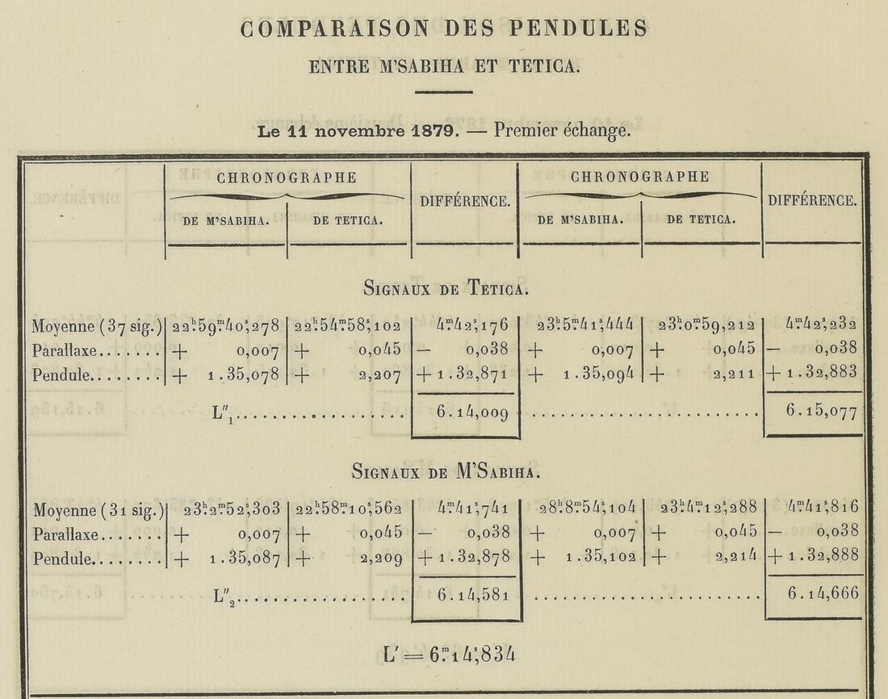
⤢13. Star transits set each clock
Each station set its own clock by stars crossing the meridian. The observer timed each star across the wires of the transit instrument. The star's apparent right ascension is its star time of transit. The clock reading at the transit, against that right ascension, gives the clock correction (p. 147):
Cp = Æ − (T + I)Here T is the observed transit and I the instrument correction. The authors give no key to the columns:
"il nous paraît inutile de donner l'explication de chacune des colonnes" (p. 116)⤢
"it seems needless to us to explain each of the columns"
| Column | Meaning |
|---|---|
| NOMS | Star name. (P. S.) upper transit, (P. I.) lower transit of a circumpolar star. |
| P | Circle position: E east, O west. |
| N | Number of wires observed. |
| PASSAGE OBSERVÉ | Clock time of the transit, mean of the wires. |
| I | Instrument correction (p. 113). |
| T | Observed transit plus I, seconds only. |
| Ac | Apparent right ascension of the star for the date, seconds only. |
| Cp | Clock correction from this star. At M'Sabiha the column head carries "1m". |
| C′p | Clock correction from the night formula, used to conclude the right ascension (p. 147). |
| ASCENSION DROITE APPAR. CONCLUE | T + C′p. |
On 11 November 1879 the M'Sabiha table holds 59 transits (pp. 143-144). The Tetica table holds 58 (pp. 174-176).
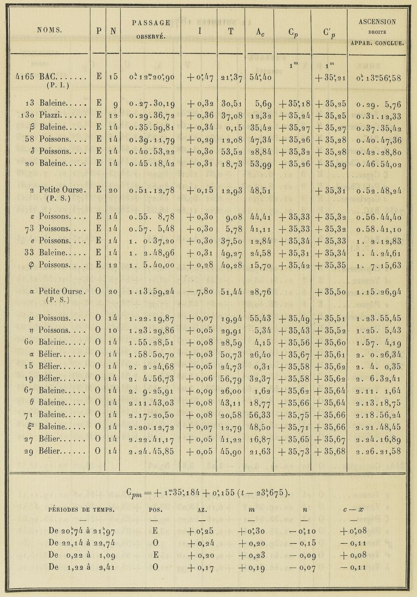
⤢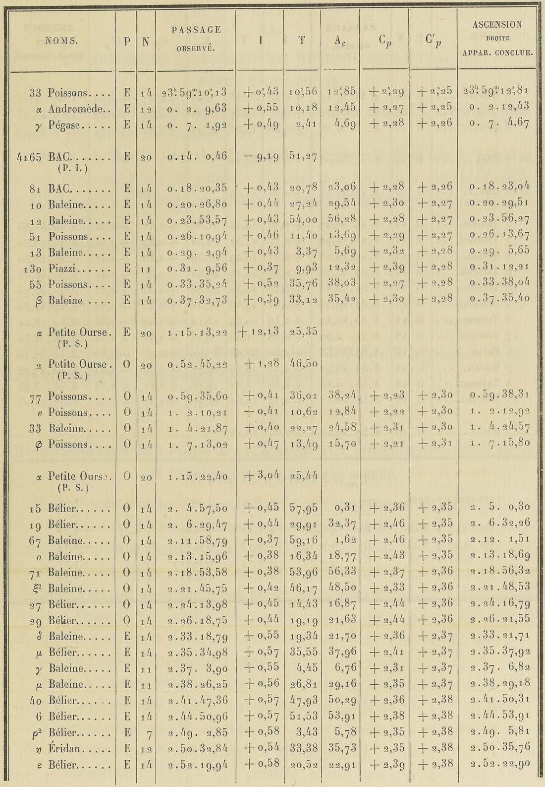
⤢Worked example: β Ceti (β Baleine), 11 November 1879.
| M'Sabiha (p. 144) | Tetica (p. 175) | |
|---|---|---|
| Observed transit | 0h 35m 59.81s | 0h 37m 32.73s |
| I | +0.34s | +0.39s |
| T | 0h 36m 00.15s | 0h 37m 33.12s |
| Apparent RA Ac | 0h 37m 35.42s | 0h 37m 35.42s |
| Cp = Ac − T | +1m 35.27s | +2.30s |
| RA concluded | 0h 37m 35.42s | 0h 37m 35.40s |
The same star has the same apparent right ascension at both stations. Each clock reads it differently, and Cp is the amount that brings each clock to star time.
The corrections of all the stars of the night combine into one formula per station, with the clock rate per hour (pp. 144, 152, 176, 182). t is the clock time in hours.
M'Sabiha: Cpm = +1m 35.184s + 0.155s (t − 23h.675)Tetica: Cpm = +2.351s + 0.045s (t − 2h.125)
Clock corrections were found on 21 nights at M'Sabiha and 8 at Tetica (pp. 152, 182). The clocks were not kept on star time. Each night the error of each clock was measured from the stars. A positive Cp means the clock is slow. At the first block of 11 November, M'Sabiha's clock was 1m 35.08s slow and Tetica's 2.21s slow (p. 236).
A Stellarium re-creation puts observers at the book's astronomical positions of the two stations and follows β Ceti across both meridians. The two meridian crossings come 6m 14.979s of star time apart (checked in Stellarium, worked out here). This is the longitude difference of p. 241.
In Stellarium, β Ceti (HIP 3419) crosses the M'Sabiha meridian at 21:18:25.4 UT and the Tetica meridian at 21:24:39.4 UT on 11 November 1879. It crosses due south, 35.7° above the horizon at M'Sabiha and 34.1° at Tetica (worked out here). 6m 14.979s of star time is 6m 13.96s of ordinary time. One star second is 1/1.0027379 of a mean second (worked out here).
14. Time is angle is distance
The sky turns 15″ of arc in one second of star time. So the time difference is an angle:
6m 14.979s × 15 = 5,624.685″ = 1° 33′ 44.685″This is worked out here. The mean latitude of the two stations is 36.46° N (worked out here, from pp. 258, 269). There, one second of arc of longitude spans about 24.84 m east-west on a sphere of 6,371 km (worked out here). So the longitude difference spans about 139.7 km east-west (worked out here). The direct side M'Sabiha-Tetica is 225,712.49 m (p. 92).
| Surface | East-west span | More than the sphere | Time at the sphere's ground rate | More than measured |
|---|---|---|---|---|
| Globe, sphere | 139.73 km | 6m 14.98s | ||
| Flat, north-pole disc | 162.35 km | +22.62 km | 7m 15.68s | +1m 0.70s |
| Dual-pole disc | 149.62 km | +9.89 km | 6m 41.52s | +26.54s |
| Mercator grid | 173.73 km | +34.00 km | 7m 46.21s | +1m 31.24s |
At the sphere's ground rate of 372.6 m per star second, the north-pole disc span takes 7m 15.68s, 1m 0.70s more than measured (worked out here).
The length of the parallel
One turn of the stars around the Earth is 24 hours of star time. The longitude difference, 6m 14.979s (p. 241), is therefore 1/230.41 of a full turn (worked out here).
The side Tetica-M'Sabiha is 225,712.49 m (p. 92). Its bearing was found from the stars at both ends:
- At Tetica, the astronomical azimuth of M'Sabiha is 321°7′8.58″, counted from south (p. 95). From north this is 141°07′08.6″.
- At M'Sabiha, the azimuth of Tetica is 157.8299,87 g, counted from south through west (p. 260). In degrees this is 142°02′49.2″. Read in the direction Tetica to M'Sabiha, the bearing of the line at M'Sabiha is 142°02′49.2″ from north (worked out here).
The mid bearing is 141°34′58.9″. The east-west part of the side is 140.25 km (worked out here):
225.712 km × sin 141°34′58.9″ = 140.25 km140.25 km × 230.41 = 32,316 km
This is the length of the parallel at the mean latitude of the two stations, 36.457° N (worked out here, from pp. 258, 269).
| Surface | Length of the 36.46° N parallel | Measured ÷ surface |
|---|---|---|
| Measured, 1879 | 32,316 km | |
| Globe (WGS84) | 32,271 km | 1.0014 |
| Globe, sphere of 6,371 km | 32,197 km | 1.0037 |
| Flat, north-pole disc | 37,408 km | 0.8639 |
| Mercator grid | 40,030 km | 0.8073 |
| Dual-pole disc | 50,172 km | 0.6441 |
Measured minus WGS84: +45 km. The north-pole disc needs the parallel 5,092 km (16%) longer than measured (worked out here).
Method check: the same steps, applied to two WGS84 points 1°33′44.69″ apart at these latitudes, give back the WGS84 parallel to 0.002% (worked out here).
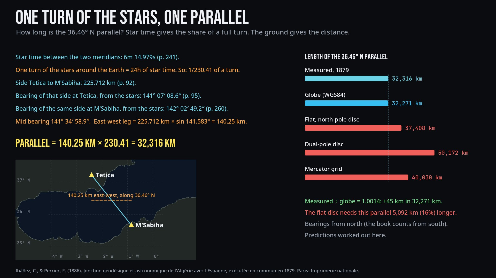
North turns between the ends
The two star bearings of the same line differ by 55′40.6″. Over a longitude difference of 1°33′44.7″, north at M'Sabiha points 55′40.6″ to the west of north at Tetica (worked out here).
- Globe: the meridians lean together. The turn is the longitude difference times the sine of the latitude. On WGS84 it is 55′42.7″ (worked out here).
- Flat north-pole disc: the meridians are straight lines from the pole. The turn is the full longitude difference, 1°33′44.7″.
Measured − flat = −38′04.1″
The ratio of the turn to the longitude difference is 0.594. The sine of 36.46° is 0.594 (worked out here). On the flat disc the ratio is 1 at every latitude.
Both star bearings belong to this side. The side computed from the book's geodetic coordinates on Bessel's ellipsoid (p. 94) has bearings within 7″ of the star bearings at both ends (worked out here).
The same test with distance. Place the two stations by the stars alone, on each surface. Then draw the measured side from Tetica at its star bearing, 225.71 km long. On the globe it ends 0.2 km from M'Sabiha. On the disc it ends 23.1 km away, and the disc puts the side at 240.3 km (worked out here).
For the spokes to turn north by the measured 55′ 40.6″, the star time between the meridians would have to be 3m 42.7s instead of 6m 14.979s, and the side would be 201.7 km (worked out here).
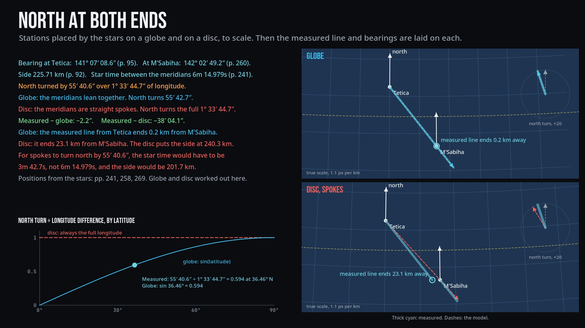
15. The star list
The memoir prints a catalogue of the stars observed, "CATALOGUE DES ÉTOILES OBSERVÉES. (1879,0.)" (pp. 104-108). It holds 190 stars. The columns are name, catalogue, magnitude, primitive right ascension, approximate declination, number of observations, correction and adopted right ascension. The catalogue letters are L (84 stars), F (75), BAC (24), φ (5) and φ² (2) (worked out here).
No key to the catalogue letters is printed in the volume. p. 103 names the source of the positions:
"Catalogue d'étoiles de longitude publié par le Bureau des longitudes" (p. 103)⤢
"Catalogue of longitude stars published by the Bureau des longitudes"
Nine circumpolar stars have no correction and no adopted right ascension. For these the table gives the primitive value, in italics. Two Tetica circumpolars, 5140 BAC and 1235 BAC, are not in the catalogue.
All 190 stars (pp. 104-108)
| Name as printed | Catalogue | Magnitude | RA 1879.0 | Page |
|---|---|---|---|---|
| λ Petite Ourse | F | 6-7 | 19h 45m 12.05s | p. 104 |
| A Sagittaire | L | 5 | 19h 51m 34.78s | p. 104 |
| γ Flèche | φ | 4-3 | 19h 53m 22.61s | p. 104 |
| c Sagittaire | F | 4-5 | 19h 55m 12.92s | p. 104 |
| τ Aigle | BAC | 5-5 | 19h 58m 13.73s | p. 104 |
| 6910 BAC (64 Aigle) | BAC | 6 | 20h 01m 46.93s | p. 104 |
| θ Aigle | F | 3-4 | 20h 05m 03.66s | p. 104 |
| 6942 BAC (66 Aigle) | BAC | 6-5 | 20h 06m 58.92s | p. 104 |
| ρ Aigle | BAC | 5 | 20h 08m 40.64s | p. 104 |
| α¹ Capricorne | F | 4 | 20h 10m 56.36s | p. 104 |
| α² Capricorne | F | 3 | 20h 11m 20.33s | p. 104 |
| β¹ Capricorne (6992) | BAC | 6-5 | 20h 13m 58.53s | p. 104 |
| β² Capricorne | F | 3-4 | 20h 14m 12.68s | p. 104 |
| 23 Hévélius | L | 5-6 | 20h 17m 10.92s | p. 104 |
| π Capricorne | BAC | 5 | 20h 20m 23.60s | p. 104 |
| ρ Capricorne | F | 5 | 20h 21m 57.41s | p. 104 |
| 69 Aigle | L | 5 | 20h 23m 19.48s | p. 104 |
| 41 Cygne | BAC | 4-5 | 20h 24m 27.19s | p. 104 |
| ε Dauphin | L | 4 | 20h 27m 25.90s | p. 104 |
| ζ Dauphin | BAC | 5 | 20h 29m 39.04s | p. 104 |
| β Dauphin | L | 4 | 20h 31m 52.46s | p. 104 |
| α Dauphin | F | 3-4 | 20h 34m 01.03s | p. 104 |
| 7169 BAC | L | 6 | 20h 34m 23.93s | p. 104 |
| 7178 BAC | BAC | 5 | 20h 35m 45.50s | p. 104 |
| δ Dauphin | φ | 4 | 20h 37m 48.55s | p. 104 |
| ψ Capricorne | F | 4-5 | 20h 38m 55.70s | p. 104 |
| 3 Verseau | F | 4 | 20h 41m 21.10s | p. 104 |
| 15 Dauphin | L | 6 | 20h 43m 51.79s | p. 104 |
| μ Verseau | F | 4-5 | 20h 46m 07.56s | p. 104 |
| 32 Petit Renard | F | 4-5 | 20h 49m 24.14s | p. 104 |
| 20 Capricorne | L | 6 | 20h 52m 43.45s | p. 104 |
| 7302 BAC (2 Pet. Cheval) | BAC | 6 | 20h 56m 14.58s | p. 104 |
| θ Capricorne | L | 4-5 | 20h 59m 08.57s | p. 104 |
| 61¹ Cygne | F | 5-6 | 21h 01m 28.37s | p. 104 |
| 61² Cygne | F | 5-6 | 21h 01m 29.90s | p. 104 |
| γ Petit Cheval | L | 5 | 21h 04m 27.39s | p. 104 |
| ζ Cygne | F | 3 | 21h 07m 47.14s | p. 104 |
| α Petit Cheval | L | 4 | 21h 09m 46.44s | p. 105 |
| ι Capricorne | BAC | 5 | 21h 15m 30.39s | p. 105 |
| 7435 BAC (19 Verseau) | BAC | 6 | 21h 18m 42.84s | p. 105 |
| b Capricorne | L | 5 | 21h 21m 49.27s | p. 105 |
| 7504 BAC | F | 6 | 21h 23m 29.89s | p. 105 |
| β Verseau | F | 3 | 21h 25m 11.28s | p. 105 |
| ε Capricorne | L | 5 | 21h 30m 18.18s | p. 105 |
| ξ Verseau | BAC | 5 | 21h 31m 18.56s | p. 105 |
| d Verseau | L | 5-6 | 21h 33m 24.85s | p. 105 |
| γ Capricorne | F | 4 | 21h 33m 23.05s | p. 105 |
| κ Capricorne | L | 5 | 21h 35m 53.96s | p. 105 |
| ε Pégase | F | 2-3 | 21h 38m 14.53s | p. 105 |
| δ Capricorne | F | 3-4 | 21h 40m 21.59s | p. 105 |
| 14 Pégase | BAC | 5 | 21h 44m 29.51s | p. 105 |
| 16 Pégase | F | 5-6 | 21h 47m 33.38s | p. 105 |
| 7641 BAC (17 Pégase) | BAC | 6 | 21h 51m 02.33s | p. 105 |
| 7659 BAC (18 Pégase) | BAC | 6 | 21h 54m 05.21s | p. 105 |
| 29 Verseau | L | 6-7 | 21h 55m 49.14s | p. 105 |
| α Verseau | F | 3 | 21h 59m 34.09s | p. 105 |
| ι Pégase | L | 4 | 22h 01m 22.66s | p. 105 |
| θ Pégase | L | 4 | 22h 04m 05.71s | p. 105 |
| 41 Verseau | L | 6 | 22h 07m 36.89s | p. 105 |
| θ Verseau | F | 4-5 | 22h 10m 26.85s | p. 105 |
| 45 Verseau | L | 6 | 22h 12m 31.00s | p. 105 |
| γ Verseau | F | 3 | 22h 15m 24.32s | p. 105 |
| 50 Verseau | L | 6 | 22h 17m 58.08s | p. 105 |
| 3441 Carrington | L | 5-6 | 22h 22m 41.96s | p. 105 |
| 58 Verseau | L | 6 | 22h 25m 16.27s | p. 105 |
| η Verseau | F | 4 | 22h 29m 08.23s | p. 105 |
| κ Verseau | BAC | 6 | 22h 31m 29.32s | p. 105 |
| ζ Pégase | F | 3 | 22h 35m 25.59s | p. 105 |
| η Pégase | F | 3 | 22h 37m 19.82s | p. 105 |
| λ Pégase | φ | 4 | 22h 40m 42.15s | p. 105 |
| g² Verseau | L | 6 | 22h 41m 03.04s | p. 105 |
| τ² Verseau | L | 4 | 22h 43m 11.02s | p. 105 |
| μ Pégase | L | 4 | 22h 44m 09.82s | p. 105 |
| λ Verseau | F | 4 | 22h 46m 18.01s | p. 105 |
| δ Verseau | F | 3 | 22h 48m 13.60s | p. 105 |
| α Poisson austral | F | 1 | 22h 50m 57.65s | p. 105 |
| 51 Pégase | BAC | 6 | 22h 51m 31.22s | p. 105 |
| 3 Poissons | BAC | 6 | 22h 54m 25.55s | p. 105 |
| ο Andromède | φ | 4-3 | 22h 56m 21.32s | p. 106 |
| β Pégase | F | 2 | 22h 57m 54.51s | p. 106 |
| α Pégase | F | 2 | 22h 58m 43.98s | p. 106 |
| 55 Pégase | BAC | 4-5 | 23h 00m 54.52s | p. 106 |
| c² Verseau | F | 4-5 | 23h 02m 59.56s | p. 106 |
| 58 Pégase | L | 5-6 | 23h 03m 55.92s | p. 106 |
| 59 Pégase | BAC | 5-5 | 23h 05m 37.63s | p. 106 |
| φ Verseau | L | 4-5 | 23h 08m 03.27s | p. 106 |
| γ Poissons | F | 4-5 | 23h 10m 53.53s | p. 106 |
| 96 Verseau | L | 6 | 23h 13m 07.50s | p. 106 |
| τ Pégase | φ² | 5-4 | 23h 14m 38.88s | p. 106 |
| b¹ Verseau | BAC | 5 | 23h 16m 36.80s | p. 106 |
| υ Pégase | F | 5 | 23h 19m 20.42s | p. 106 |
| κ Poissons | F | 5-6 | 23h 20m 43.75s | p. 106 |
| 70 Pégase | φ² | 5 | 23h 23m 02.11s | p. 106 |
| 8213 BAC | F | 5-6 | 23h 27m 50.47s | p. 106 |
| ι Poissons | F | 4-5 | 23h 33m 43.58s | p. 106 |
| 8243 BAC | BAC | 5-6 | 23h 35m 52.30s | p. 106 |
| 19 Poissons | L | 6 | 23h 40m 12.51s | p. 106 |
| δ Sculpteur | F | 5 | 23h 42m 37.21s | p. 106 |
| 21 Poissons | L | 6 | 23h 43m 15.74s | p. 106 |
| φ Pégase | L | 6 | 23h 46m 19.98s | p. 106 |
| 8315 BAC | BAC | 7 | 23h 49m 26.43s | p. 106 |
| ω Poissons | F | 4-5 | 23h 53m 05.85s | p. 106 |
| 30 Poissons | F | 4-5 | 23h 55m 45.20s | p. 106 |
| 2 Baleine | F | 4 | 23h 57m 22.35s | p. 106 |
| 33 Poissons | L | 5 | 23h 59m 08.45s | p. 106 |
| 5 Baleine | L | 6 | 0h 02m 00.30s | p. 106 |
| α Andromède | F | 2 | 0h 02m 08.03s | p. 106 |
| 17 BAC | L | 6-7 | 0h 04m 07.13s | p. 106 |
| γ Pégase | F | 2 | 0h 07m 00.30s | p. 106 |
| 35 Poissons | L | 6 | 0h 08m 44.85s | p. 106 |
| 57 BAC | L | 6-7 | 0h 11m 34.81s | p. 106 |
| 4165 BAC (P. I.) | F | 6 | 0h 14m 18.24s | p. 106 |
| 81 BAC | L | 6-7 | 0h 18m 18.59s | p. 106 |
| 10 Baleine | L | 6 | 0h 20m 25.06s | p. 106 |
| 12 Baleine | F | 6 | 0h 23m 51.80s | p. 106 |
| 51 Poissons | L | 6 | 0h 26m 09.20s | p. 106 |
| 13 Baleine | F | 6 | 0h 29m 01.16s | p. 106 |
| π Andromède | φ | 4 | 0h 30m 25.21s | p. 106 |
| 130 Piazzi | F | 6 | 0h 31m 07.63s | p. 106 |
| 15 Baleine | L | 6-7 | 0h 31m 53.33s | p. 107 |
| 55 Poissons | L | 6 | 0h 33m 33.43s | p. 107 |
| β Baleine | F | 2-3 | 0h 37m 30.84s | p. 107 |
| 58 Poissons | L | 5-6 | 0h 40m 42.76s | p. 107 |
| δ Poissons | F | 5 | 0h 42m 24.26s | p. 107 |
| 20 Baleine | L | 5 | 0h 46m 49.42s | p. 107 |
| 2 Petite Ourse | L | 5 | 0h 52m 29.39s | p. 107 |
| ε Poissons | F | 4 | 0h 56m 39.78s | p. 107 |
| 73 Poissons | L | 6 | 0h 58m 36.47s | p. 107 |
| 77 Poissons | L | 6 | 0h 59m 33.61s | p. 107 |
| e Poissons | L | 5-6 | 1h 02m 08.21s | p. 107 |
| η Baleine | L | 3-4 | 1h 02m 30.11s | p. 107 |
| 33 Baleine | L | 6 | 1h 04m 19.94s | p. 107 |
| τ Poissons | L | 4-5 | 1h 04m 59.92s | p. 107 |
| φ Poissons | L | 5 | 1h 07m 10.84s | p. 107 |
| f Poissons | L | 6 | 1h 11m 33.42s | p. 107 |
| α Petite Ourse | F | 2 | 1h 14m 24.50s | p. 107 |
| θ Baleine | F | 3 | 1h 17m 58.41s | p. 107 |
| μ Poissons | L | 5 | 1h 23m 50.68s | p. 107 |
| η Poissons | F | 4 | 1h 25m 00.51s | p. 107 |
| 101 Poissons | L | 6-7 | 1h 29m 18.27s | p. 107 |
| π Poissons | L | 6 | 1h 30m 41.11s | p. 107 |
| 105 Poissons | L | 6 | 1h 33m 09.16s | p. 107 |
| ν Poissons | F | 5 | 1h 35m 08.03s | p. 107 |
| ο Poissons | F | 5 | 1h 39m 00.26s | p. 107 |
| ε Sculpteur | F | 5 | 1h 39m 58.67s | p. 107 |
| 54 Baleine | L | 6 | 1h 44m 26.77s | p. 107 |
| β Bélier | F | 3 | 1h 47m 57.41s | p. 107 |
| 586 BAC | L | 6-7 | 1h 49m 38.56s | p. 107 |
| 58 Baleine | L | 7 | 1h 51m 50.45s | p. 107 |
| 112 Poissons | L | 6-7 | 1h 53m 51.48s | p. 107 |
| 60 Baleine | L | 6 | 1h 56m 59.37s | p. 107 |
| α Bélier | F | 2 | 2h 00m 21.24s | p. 107 |
| 15 Bélier | L | 6 | 2h 03m 55.22s | p. 107 |
| 19 Bélier | L | 6 | 2h 06m 27.35s | p. 107 |
| 67 Baleine | F | 6 | 2h 10m 56.88s | p. 107 |
| ο Baleine | F | Var. | 2h 13m 14.00s | p. 107 |
| 71 Baleine | L | 6 | 2h 18m 51.54s | p. 107 |
| ξ² Baleine | F | 4 | 2h 21m 43.55s | p. 107 |
| 27 Bélier | L | 6-7 | 2h 24m 11.75s | p. 107 |
| 29 Bélier | L | 6-7 | 2h 26m 16.56s | p. 107 |
| 123 Piazzi | F | 6-7 | 2h 29m 26.79s | p. 108 |
| δ Baleine | L | 4 | 2h 33m 16.85s | p. 108 |
| μ Bélier | L | 6 | 2h 35m 32.74s | p. 108 |
| γ Baleine | F | 3 | 2h 37m 01.89s | p. 108 |
| μ Baleine | L | 4 | 2h 38m 24.13s | p. 108 |
| 40 Bélier | L | 6 | 2h 41m 45.09s | p. 108 |
| σ Bélier | L | 6 | 2h 44m 48.79s | p. 108 |
| ρ² Bélier | L | 6 | 2h 49m 00.56s | p. 108 |
| η Éridan | L | 3 | 2h 50m 30.99s | p. 108 |
| ε Bélier | F | 5 | 2h 52m 17.62s | p. 108 |
| α Baleine | F | 2-3 | 2h 55m 57.29s | p. 108 |
| 53 Bélier | L | 6-7 | 3h 00m 37.00s | p. 108 |
| δ Bélier | F | 4 | 3h 04m 42.68s | p. 108 |
| α Éridan | F | 3-4 | 3h 06m 55.99s | p. 108 |
| ξ Taureau | F | 4 | 3h 20m 36.79s | p. 108 |
| f Taureau | L | 4-5 | 3h 24m 11.69s | p. 108 |
| ε Éridan | F | 3-4 | 3h 27m 13.84s | p. 108 |
| 9 Taureau | L | 6 | 3h 29m 51.18s | p. 108 |
| 13 Taureau | L | 6 | 3h 35m 20.31s | p. 108 |
| δ Éridan | F | 3-4 | 3h 37m 27.13s | p. 108 |
| η Taureau | F | 3 | 3h 40m 17.61s | p. 108 |
| 27 Taureau | L | 4 | 3h 41m 58.03s | p. 108 |
| ζ Persée | F | 3-4 | 3h 46m 31.69s | p. 108 |
| γ¹ Éridan | F | 2-3 | 3h 52m 23.10s | p. 108 |
| λ Taureau | F | 3-4 | 3h 53m 58.57s | p. 108 |
| 36 Taureau | L | 6 | 3h 57m 07.44s | p. 108 |
| 48 Taureau | L | 6 | 4h 08m 54.20s | p. 108 |
| φ Taureau | L | 5-6 | 4h 12m 54.82s | p. 108 |
| δ¹ Taureau | L | 4 | 4h 15m 57.45s | p. 108 |
| υ¹ Taureau | L | 5 | 4h 19m 04.21s | p. 108 |
16. Sigma analysis
A rule for measuring curvature from surveyors' triangles was fixed and written down before the run. The rule is applied here to the four triangles of the junction (worked out here). Its steps:
- The measured excess of a triangle is the sum of its three observed angles minus 180°.
- The area comes from the printed sides by Heron's formula, not from coordinates. A triangle whose side area and coordinate area differ by more than 2% falls to tier C.
- Tier A (weight 1.00): three observed angles and three printed sides. Tier B (0.50): one or two printed sides. Tier C (0.25): area from coordinates only.
- The noise σs of a survey is 1.4826 times the median absolute deviation of the residuals from that survey's own fit, excess = ks × area. No ellipsoid enters.
- Signal to noise: K₀ × area / σs, with K₀ = 1/(6,371 km)². Triangles below 2 are cut.
- The fit is excess = K × area, by weighted least squares through the origin, weights tier / σs². The error is the sandwich variance, raised by √(χ²/dof) when that exceeds 1.
- K is compared with K = 1/(MN) on WGS84 at each triangle's mean latitude.
- Sensitivity runs are reported, not chosen between: cuts at 0, 1, 2 and 3; tier weights; areas from coordinates.
| Triangle | Measured excess | Area from sides | Signal / noise | Side / coord area | Tier |
|---|---|---|---|---|---|
| 4,2,1 Filh., Tet., Mul. | 54.426″ | 10,660.2 km² | 41.9 | 0.99987 | A |
| 3,1,4 MSab., Mul., Filh. | 70.030″ | 13,921.2 km² | 54.7 | 0.99989 | A |
| 3,2,1 MSab., Tet., Mul. | 45.424″ | 8,561.2 km² | 33.6 | 0.99987 | A |
| 4,3,2 Filh., MSab., Tet. | 61.028″ | 11,822.4 km² | 46.4 | 0.99992 | A |
The signal of each triangle is K₀ × area: the excess a sphere of 6,371 km gives for its area. It is 54.17″, 70.74″, 43.51″ and 60.08″ (worked out here). Divided by σs = 1.294″, these give the signal to noise column. All four triangles pass the cut of 2. The lowest signal to noise is 33.6 (worked out here).
The four triangles cover the quadrilateral twice, once for each diagonal. They share area in pairs, and their excesses obey one relation: 54.426″ + 61.028″ = 70.030″ + 45.424″ (section 9). So three of the four are independent.
| Result | Value |
|---|---|
| σs | 1.294″ |
| χ²/dof | 0.87 |
| K | 2.483 × 10⁻¹⁴ m⁻² ± 0.027 × 10⁻¹⁴ m⁻² |
| K from zero | 90 σ. A flat surface (K = 0) is rejected. |
| K / K(WGS84) | 1.0079 ± 0.0112 |
| K / K(WGS84) from 1 | 0.7 σ |
| R | 6,347 km (6,312 km to 6,382 km) |
| Cut at 0, 1 or 3 | all four kept, unchanged |
| Tier weights | all four tier A, unchanged |
| Areas from coordinates | 1.0078 ± 0.0112, R 6,347 km |
| 391 survey triangles from other arcs | R 6,389 km, K / K(ell) 0.9953 |
| 391 plus these four (395) | R 6,383 km, K / K(ell) 0.9970 |
What the corrections did and what flat needs
| Quantity | Their largest correction or precision | Globe | Flat north-pole disc |
|---|---|---|---|
| Angles | Closures up to 1.93″ (p. 88). Adjustment corrections up to 0.884″ (p. 91). Reduction to centre moved a sum by up to 17.1″. | Sums 45.4″ to 70.0″ over 180°: the measured excess. | Every sum must be 180°. 45.4″ to 70.0″ must come out of each sum. |
| Area | 22,482.6 km² from the checked sides. R = 6,338 km ± 44 km. | 115.454″ over the quadrilateral gives R = 6,338 km. | Excess 0″. No finite R gives 115.5″. |
| Distance | Side check: 0.79 m in 105 km, 1 in 133,000 (p. 93). | East-west span 139.73 km. | 162.35 km: 22.62 km (16%) more. |
| Star time | ± 0.013s (p. 241). | 6m 14.98s. | 7m 15.68s: 1m 0.70s more. |
| Vertical, Mulhacén from Filhaoussen | Read to about ± 16″. Printed 90°30′47″ (p. 83). | 33′30″ below level (90°33′30″). | 29′51″ above level: 1°0′38″ off the reading. |
Their corrections change angles by seconds and times by hundredths of a second. A flat north-pole disc needs whole minutes of time and kilometres of distance (worked out here).
17. Print slips and inconsistencies
| Where | As printed | Evidence |
|---|---|---|
| p. 88, M'Sabiha → Mulhacén | 16°19′52.519″ | Station table gives 18.1457,466 g = 16°19′52.219″ (p. 75). Condition III (p. 89), the side equation (p. 90) and the compensated 51.669″ (p. 92) all use 52.219″. The +1.926″ closure (p. 88) needs 52.219″. |
| p. 88, weight equations | (5), (6) headed Filhaoussen; (7), (8) headed M'Sabiha | Swapped. 0.0408 / 0.0204 belong to M'Sabiha (p. 75), 0.05000 / 0.02500 to Filhaoussen (p. 85). |
| p. 8 and p. 9, collimation term | ± K(V − V₀)/sin Z, then ± K″(V − V₀) | The p. 9 summary drops /sin Z. |
| p. 90 and pp. 90-91, side equation | −0.00603, −0.43843, −3.61062, +0.19778, −3.10084, +2.90152 | The [3] to [8] values use −0.00612, −0.43835, −3.61162, +0.19789, −3.10177, +2.90233. |
| p. 92, triangle 3,2,1, log of Tetica side | 4,431.11797 | The characteristic must be 5 for 269,847.23 m. |
| p. 92, repeated sides | 269,847.24 / 269,847.23; 257,412.28 / 257,412.27 | Same sides differ by 0.01 m. |
| p. 92, triangle 3,2,1 total | 180° 0′ 43.497″ | Excess on p. 88 is 43.498″. |
| p. 95, Laplace second term | −4.27″ | −7.11″ × sin 37°15′ gives −4.30″ (worked out here). |
| p. 57, Tetica series 41 | 83°39′8.79″ | The group table prints 89°39′8.79″ (p. 59). |
| pp. 70-71, M'Sabiha → Mulhacén, six series | 20.14xx g | Group table and results use 18.14xx g (pp. 72, 75). |
| p. 71, M'Sabiha series 57 | 69,61 | p. 72 prints 69,81. The group sum +4,76 needs 69,81. |
| p. 72, M'Sabiha group 2 | 18 x₂ = −10,7400 = 9,0000 A | The second "=" must be "−" (p. 74). |
| p. 84, Filhaoussen → Mulhacén mean | 87.4763,30 g | The mean of the 40 printed values is 87.4763,314 g. |
| p. 68, M'Sabiha last series | "Le 2" (October) | Last date in the table is 1 October (pp. 70-71). |
| p. 269, Tetica latitude error | ± 0s,09 | A latitude error in seconds of arc. |
| p. 276 and p. 241, longitude | 6′ 14″,979, "erreur probable" ± 0″,013 | p. 241 gives 6m 14s.979 in time and calls ± 0s.013 the "erreur moyenne". |
| p. 152, M'Sabiha clock correction | +21s.485 (20 Oct) to +2s.503 (21 Oct) | A drop of 18.982 s between consecutive nights (worked out here). |
| p. 226, exchange of 20 October | "Unique échange" | The page holds two part-tables. |
| p. 143, 7659 BAC | Ac 8,33 | Cp +34,83 and the concluded RA 21.54.8,83 both need 8,83. |
| p. 236, first Tetica block | L″₁ 6.14,009 | The three parts add to 6.15,009. The group value L′ = 6.14,834 needs 15,009. |
| p. 236, M'Sabiha block, right half | 28h.8m54s,104 | The time is 23h (p. 211). |
| p. 238, last M'Sabiha block, right half | Tetica pendule +3,333 | The difference +1.33,178 = 1.35,511 − 2,333 needs 2,333. |
| p. 210, right Tetica block | 37 rows, means 23h5m41s.443 / 23h0m59s.212 / 4m42s.232 | The 37 rows give 40.468 / 58.239 / 42.229 (worked out here). The printed means fit 38 signals. p. 236 repeats the mean as 41s.444. |
| p. 106, 2 Baleine | adopted RA 23.57.22,35 | Primitive 23.57.32,37 with correction −0,02 gives 32,35. The Tetica Ac 36,83 (p. 174) fits 32. |
| p. 104 τ Aigle, p. 106 59 Pégase | magnitude "5-5" | A range with equal ends. |
| p. 105, ε Capricorne | declination +20. 0 | All other Capricorne stars are negative. |
| p. 176, p. 174, catalogue | γ Éridan / γ Orion / γ¹ Éridan | Three names for the star at 3h52m: 11 Nov table, 10 Nov table, catalogue. |
| p. 176, Tetica series periods | "De 0,87 à 2,43" after "De 23,77 à 1,25"; epoch 2h.12 | The periods overlap. p. 182 prints the epoch as 2,125. |
| p. 175, Tetica | 2 Petite Ourse (P. S.) O at 0h52m after α Petite Ourse E at 1h15m | Out of time order. |
18. References
- Ibáñez, C., & Perrier, F. (1886). Jonction géodésique et astronomique de l'Algérie avec l'Espagne, exécutée en commun en 1879. Paris: Imprimerie nationale. https://gallica.bnf.fr/ark:/12148/bpt6k317496c
- Perrier, F. (1879). Jonction géodésique de l'Algérie avec l'Espagne. Comptes rendus hebdomadaires des séances de l'Académie des Sciences, 89, 885-889.
- Natural Earth. (2022). 1:10m land, version 5.1.1.